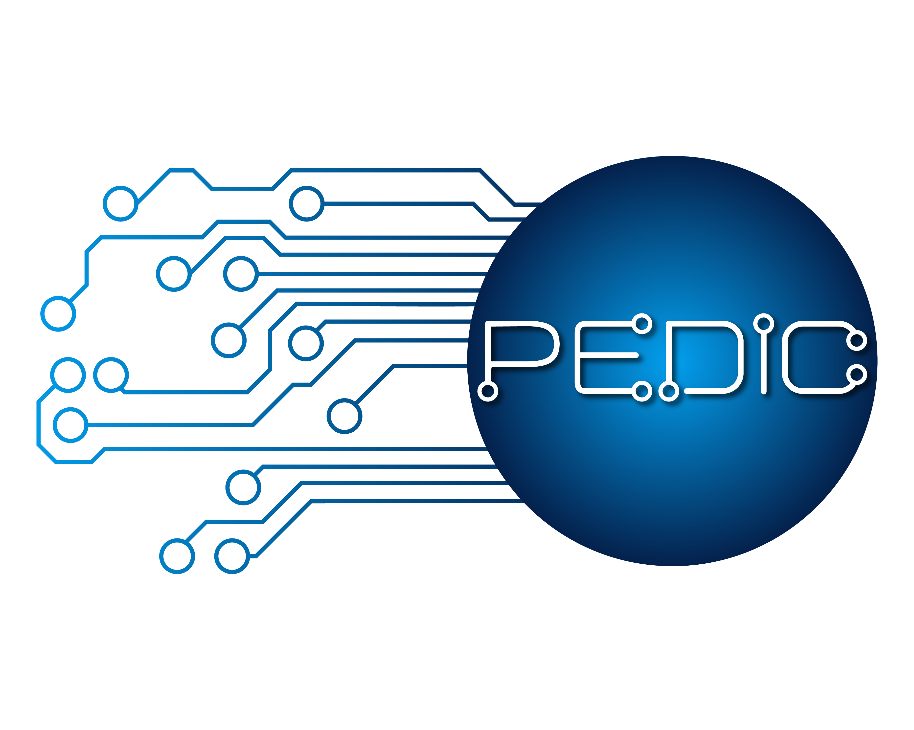

<!DOCTYPE html>
<html lang="pt-BR">
<head>
<meta charset="utf-8">
<meta name="viewport" content="width=device-width, initial-scale=1">
<title>Livro de assentos - Produção acadêmica</title>
<style>
  :root{
    /* base branca, como no site */
    --paper:#FFFFFF; --card:#FFFFFF; --ink:#1C1C1C; --ink2:#6B7280; --rule:#EAEAEA;
    --mostarda:#E0A231; --mostarda-tom:#FBF0DC;
    --sec-hoje:#E0A231; --sec-projetos:#22B04D; --sec-producao:#4285F4;
    --sec-orientacoes:#E53935; --sec-contas:#1C1C1C;
    /* projetos: a forma identifica, a cor acompanha */
    --navy:#123A6B; --amber:#B5820A; --vinho:#8E2652; --grafite:#4A5259;
    --navy-soft:#E8EEF6; --amber-soft:#F7EEDA; --vinho-soft:#F6E8EE; --grafite-soft:#EDEEEF;
    /* estado */
    --stamp:#D9531E; --green:#1F7A5A; --stamp-soft:#FBE9E1; --green-soft:#E3F0EB;
    --stamp-tom:#FCF0EA; --amber-tom:#FAF4E7;
    --marca:"Arial Black","Arial Bold","Franklin Gothic Heavy",Impact,system-ui,sans-serif;
    --body:system-ui,-apple-system,"Segoe UI",Roboto,"Helvetica Neue",Arial,sans-serif;
    --display:var(--body); --data:var(--body);
    --sombra:0 1px 2px rgba(28,28,28,.04), 0 4px 14px rgba(28,28,28,.06);
    --fio:#EDEDEA;
    --lateral:220px;
  }
  *{box-sizing:border-box}
  body{margin:0;background:var(--paper);color:var(--ink);font-family:var(--body);font-size:14px;line-height:1.45}
  h1,h2,h3{font-family:var(--body);font-weight:700;margin:0}
  h1{font-size:20px;line-height:1.2}
  h2{font-size:15.5px;margin-bottom:7px}
  h3{font-size:14px;line-height:1.35}

  .app{display:flex;min-height:100vh}
  /* ---------- barra lateral escura, com a logo do museu ---------- */
  .lateral{width:var(--lateral);flex:0 0 var(--lateral);background:#141414;border-right:none;
    position:fixed;top:0;bottom:0;left:0;display:flex;flex-direction:column;padding:20px 0 14px;overflow-y:auto}
  /* a logo tem letra preta: sobre o fundo escuro ela é invertida para branco */
  .logo-lateral{width:calc(100% - 32px);max-width:158px;height:auto;margin:0 16px 18px;display:block;
    filter:brightness(0) invert(1)}
  .destinos{display:flex;flex-direction:column;gap:3px;padding:0 12px}
  /* item ativo: pílula totalmente arredondada em mostarda com texto preto, como no menu do site */
  .destino{display:flex;align-items:center;gap:10px;width:100%;text-align:left;padding:8px 14px;
    border-radius:999px;border:none;background:none;cursor:pointer;font-family:var(--body);
    font-size:13.5px;font-weight:400;color:#B9B9B9}
  .destino .ic{flex:none}
  .destino:hover{background:rgba(255,255,255,.07);color:#fff}
  .destino.on{background:var(--mostarda);color:#1C1C1C;font-weight:700}
  .lateral hr{border:none;border-top:1px solid rgba(255,255,255,.14);margin:12px 16px}
  .lateral .pe{margin-top:auto}
  .conteudo{flex:1;min-width:0;margin-left:var(--lateral);display:flex;flex-direction:column}

  /* ---------- faixa de seção: título à esquerda, ação à direita ---------- */
  .faixa-secao{padding:26px 30px}
  .faixa-secao .wrap{display:flex;align-items:center;justify-content:space-between;gap:20px;flex-wrap:wrap}
  .faixa-secao .textos{min-width:0}
  .faixa-secao .nome{font-family:var(--marca);font-weight:900;text-transform:uppercase;letter-spacing:.015em;
    font-size:34px;line-height:1.05;margin:0}
  .faixa-secao .sub{font-size:12px;letter-spacing:.1em;text-transform:uppercase;margin-top:6px;opacity:.92}
  .faixa-secao .direita{display:flex;align-items:center;gap:14px}
  /* vazio, o indicador nao pode gerar recuo antes do botao */
  .faixa-secao .salvo:empty{display:none}
  .faixa-secao .btn-faixa{padding:9px 18px;border-radius:999px;border:none;cursor:pointer;
    font-family:var(--body);font-size:13.5px;font-weight:700;white-space:nowrap}
  /* abaixo de 640px a ação desce para uma linha própria, alinhada à esquerda */
  @media(max-width:640px){
    .faixa-secao .wrap{flex-direction:column;align-items:flex-start;gap:14px}
    .faixa-secao .nome{font-size:26px}
    .faixa-secao .direita{width:100%;justify-content:flex-start}
  }

  /* marca d'água das quatro formas do controle, atrás do conteúdo */
  main{flex:1;padding:20px 30px 44px}
  .wrap{max-width:1180px;margin:0 auto}
  .abrir-menu{display:none}

  @media(max-width:899px){
    .app{display:block}
    .lateral{position:relative;width:auto;flex:none;border-right:none;
      border-bottom:1px solid rgba(255,255,255,.14);padding:14px 0 10px}
    .lateral .destinos,.lateral hr,.lateral .pe{display:none}
    .lateral.aberta .destinos,.lateral.aberta hr,.lateral.aberta .pe{display:flex;flex-direction:column}
    .lateral .pe{margin-top:8px}
    .conteudo{margin-left:0}
    .abrir-menu{display:inline-block;position:absolute;top:16px;right:18px}
    main{padding:14px 16px 32px}
    .faixa-secao{padding:22px 16px}
  }

  /* ---------- cartões brancos, cantos 16, sombra suave ---------- */
  .card{background:#fff;border:1px solid var(--fio);border-radius:16px;padding:16px 18px;box-shadow:var(--sombra)}
  .grid{display:grid;gap:12px}
  .g2{grid-template-columns:repeat(2,1fr)} .g3{grid-template-columns:repeat(3,1fr)} .g4{grid-template-columns:repeat(4,1fr)}
  @media(max-width:820px){.g2,.g3,.g4{grid-template-columns:1fr}}
  .full{grid-column:1/-1}
  @media(max-width:820px){.full{grid-column:1}}

  .fx{border-left:4px solid var(--rule)}
  /* sobretítulo em mostarda + título preto de peso alto */
  .sobre{font-size:11px;letter-spacing:.15em;text-transform:uppercase;color:var(--mostarda);
    font-weight:700;margin:0 0 3px}
  .tit-secao{font-family:var(--marca);font-weight:900;text-transform:uppercase;letter-spacing:.01em;
    font-size:19px;line-height:1.15;color:var(--ink);margin:0}

  .num{font-family:var(--body);font-size:22px;font-weight:700;line-height:1;letter-spacing:-.01em}
  .num.zero{font-size:15px;font-weight:500;color:var(--ink2)}
  .rot{font-size:12px;color:var(--ink2);margin-top:3px}
  .meta{font-size:13px;color:var(--ink2);margin-top:2px}
  .secao{font-size:11px;color:var(--mostarda);letter-spacing:.15em;text-transform:uppercase;font-weight:700;margin:0 0 8px}
  .nada{font-size:13px;color:var(--ink2);margin:5px 0 12px}

  .fnum{display:flex;flex-wrap:wrap;background:#fff;border:1px solid var(--fio);border-radius:16px;
    box-shadow:var(--sombra);margin-bottom:16px;overflow:hidden}
  .fnum > div{flex:1;min-width:118px;padding:11px 16px;border-right:1px solid var(--rule)}
  .fnum > div:last-child{border-right:none}

  label{display:block;font-size:12.5px;color:var(--ink2);margin-bottom:4px}
  input,select,textarea{width:100%;padding:8px 11px;border:1px solid var(--rule);border-radius:10px;
    background:#FBFBFA;color:var(--ink);font-family:var(--body);font-size:13.5px;outline:none}
  textarea{min-height:64px;resize:vertical;border-radius:12px}
  input:focus,select:focus,textarea:focus{border-color:var(--mostarda);box-shadow:0 0 0 3px var(--mostarda-tom)}

  /* botões como pílulas; o primário em mostarda com texto preto */
  .btn{padding:7px 16px;border-radius:999px;font-size:13px;font-weight:600;cursor:pointer;
    border:1px solid var(--rule);background:#fff;color:var(--ink);font-family:var(--body)}
  .btn:hover{border-color:#C9C9C9}
  .btn.pri{background:var(--mostarda);color:#1C1C1C;border-color:var(--mostarda);font-weight:700}
  .btn.pri:hover{background:#D2942A;border-color:#D2942A}
  .btn.dan{color:var(--stamp);border-color:#F0D6C8}
  .btn.sm{padding:4px 12px;font-size:12.5px}
  .btn.liso{border-color:transparent;background:none;color:var(--ink2);padding-left:0}
  /* link de ação em caixa alta com seta, como o "Ler notícia" do site */
  .acao{display:inline-flex;align-items:center;gap:8px;font-size:11.5px;font-weight:700;letter-spacing:.12em;
    text-transform:uppercase;color:var(--ink);background:none;border:none;padding:0;cursor:pointer;font-family:var(--body)}
  .acao:hover{color:var(--mostarda)}

  /* etiquetas de categoria como pílulas pequenas */
  .tag{display:inline-flex;align-items:center;gap:5px;padding:3px 10px;border-radius:999px;
    font-size:11px;font-weight:700;letter-spacing:.05em;text-transform:uppercase}
  .pilula{display:inline-flex;align-items:center;gap:6px;padding:3px 11px;border-radius:999px;
    font-size:11px;font-weight:700;letter-spacing:.06em;text-transform:uppercase}
  .carimbo{display:inline-block;padding:3px 10px;border-radius:999px;background:var(--stamp-soft);
    color:var(--stamp);font-size:11px;font-weight:700;letter-spacing:.04em;white-space:nowrap;border:none}
  .carimbo.ok{background:var(--green-soft);color:var(--green)}
  .marc{flex:none;vertical-align:-2px}
  .comarca{display:inline-flex;align-items:center;gap:8px}

  .item{background:#fff;border:1px solid var(--fio);border-radius:16px;padding:14px 16px;cursor:pointer;
    margin-bottom:10px;box-shadow:var(--sombra)}
  .item:hover{box-shadow:0 2px 4px rgba(28,28,28,.06), 0 8px 22px rgba(28,28,28,.10)}
  .metacard{cursor:default}

  .lin{background:#fff;border:1px solid var(--fio);border-radius:12px;margin-bottom:6px;padding:8px 14px;
    cursor:pointer;box-shadow:0 1px 2px rgba(28,28,28,.04)}
  .lin:hover{box-shadow:var(--sombra)}
  .lin .cab{display:flex;align-items:center;gap:10px;flex-wrap:wrap}
  .lin .tit{flex:1;min-width:180px;font-size:13.5px;white-space:nowrap;overflow:hidden;text-overflow:ellipsis}
  .lin .quando{font-size:12.5px;color:var(--ink2);white-space:nowrap}
  .det{border-top:1px solid var(--rule);margin-top:9px;padding-top:9px;cursor:default}
  .det .bloco{margin-bottom:9px}
  /* a urgência é comunicada pela borda colorida à esquerda e pela pílula de prazo */
  .lin.feito .tit{color:var(--ink2)}

  .linha{display:flex;justify-content:space-between;gap:12px;flex-wrap:wrap;align-items:flex-start}
  .sep{border-top:1px solid var(--rule);padding-top:8px;margin-top:9px;display:flex;gap:8px;align-items:center;flex-wrap:wrap}
  /* indicador único de toda a plataforma: número preto, cor só no ladrilho do ícone */
  .indicadores{display:grid;grid-template-columns:repeat(4,1fr);gap:12px;margin-bottom:16px}
  @media(max-width:900px){.indicadores{grid-template-columns:repeat(2,1fr)}}
  @media(max-width:520px){.indicadores{grid-template-columns:1fr}}
  .indicador{background:#fff;border:1px solid var(--rule);border-radius:14px;box-shadow:var(--sombra);
    padding:16px 18px;display:flex;align-items:center;gap:14px}
  .indicador .ladrilho{width:38px;height:38px;border-radius:10px;flex:none;
    display:flex;align-items:center;justify-content:center}
  .indicador .rotulo{font-size:11px;text-transform:uppercase;letter-spacing:.08em;color:var(--ink2)}
  .indicador .valor{font-size:26px;font-weight:900;color:var(--ink);line-height:1.15;margin-top:2px}
  /* barra de filtros como cartão, igual em Produção e em Orientações */
  .filtros{background:#fff;border:1px solid var(--rule);border-radius:14px;box-shadow:var(--sombra);
    padding:16px 18px;margin-bottom:16px;display:flex;gap:16px;align-items:flex-end;flex-wrap:wrap}
  .filtros .campo{flex:1;min-width:160px}
  .filtros .campo > label{font-size:11px;text-transform:uppercase;letter-spacing:.08em;color:var(--ink2);margin-bottom:6px}
  .filtros .direita{margin-left:auto;display:flex;gap:6px;align-items:center}
  /* estado vazio como cartão de borda tracejada */
  .vazio{border:1px dashed var(--rule);border-radius:14px;background:#fff;padding:44px 24px;text-align:center}
  .vazio .icone{color:var(--rule);line-height:0;margin-bottom:14px}
  .vazio .titulo{font-size:15px;font-weight:700;margin-bottom:6px}
  .vazio .expl{font-size:13px;color:var(--ink2);margin-bottom:16px;max-width:46ch;
    margin-left:auto;margin-right:auto}
  /* pílula de contagem regressiva */
  .prazo-pilula{display:inline-block;border-radius:999px;padding:4px 11px;font-size:12px;
    font-weight:600;white-space:nowrap}
  .col{background:#fff;border:1px solid var(--fio);border-radius:16px;padding:12px;box-shadow:var(--sombra)}
  .mini{border-radius:10px;background:#FBFBFA;padding:9px;cursor:pointer;margin-bottom:6px}
  .barra{height:10px;background:var(--mostarda);border-radius:999px;min-width:10px}
  .chip{padding:6px 13px;border-radius:999px;cursor:pointer;font-size:12.5px;border:1px solid var(--rule);
    background:#fff;color:var(--ink2);display:inline-flex;align-items:center;gap:6px}
  .chip.on{background:var(--mostarda);color:#1C1C1C;border-color:var(--mostarda);font-weight:700}
  .aviso{background:var(--stamp-soft);color:var(--stamp);padding:9px 26px;font-size:13px}
  .salvo{font-size:12px;color:var(--ink2)}

  .modal{position:fixed;inset:0;background:rgba(28,28,28,.45);display:flex;align-items:center;
    justify-content:center;padding:16px;z-index:50}
  .modal .box{background:#fff;border-radius:16px;width:100%;max-width:740px;max-height:92vh;
    overflow-y:auto;padding:20px 22px}

  .cabeca{border-radius:16px;padding:16px 18px;margin-bottom:14px;display:flex;gap:16px;align-items:flex-start}
  .cabeca .forma{flex:none;padding-top:2px}
  .cabeca h2{font-family:var(--marca);font-weight:900;text-transform:uppercase;font-size:17px;
    line-height:1.15;margin:0 0 4px;letter-spacing:.01em}

  /* ---------- rodapé preto ---------- */
  .rodape{background:#1C1C1C;color:#fff;padding:30px 30px 20px;margin-top:28px}
  .rodape .cols{display:flex;gap:44px;flex-wrap:wrap;justify-content:center;text-align:center}
  .rodape h4{font-size:11px;letter-spacing:.15em;text-transform:uppercase;color:rgba(255,255,255,.7);
    margin:0 0 12px;font-weight:700}
  .placa{display:inline-flex;align-items:center;gap:24px;flex-wrap:wrap}
  .placa img{height:40px;width:auto;display:block}
  /* marcas quase quadradas precisam de mais altura para equilibrar com os logotipos horizontais */
  .placa img.alta{height:54px}
  /* as logos das agências são azul-escuro: viram branco chapado, como no rodapé do site */
  .placa img.branca{filter:brightness(0) invert(1)}
  .marca-ufma{font-family:var(--marca);font-weight:900;font-size:19px;letter-spacing:.06em;color:#1C1C1C}
  .rodape .credito{border-top:1px solid rgba(255,255,255,.16);margin:22px 0 0;padding-top:14px;
    font-size:12px;color:rgba(255,255,255,.62)}

  .tl{width:100%;height:auto;display:block}
  .tl text{font-family:var(--body)}
  svg text{font-family:var(--body)}
  .ag{display:flex;align-items:baseline;gap:10px;padding:8px 13px;background:#fff;margin-bottom:5px;
    border:1px solid var(--fio);border-left:4px solid var(--rule);border-radius:11px}
  .ag .quando{flex:0 0 120px;font-size:12.5px;color:var(--ink2)}
  .ag .oque{flex:1;min-width:180px;font-size:13.5px}
  .ag .dias{font-size:12.5px;white-space:nowrap}
  .ag.longe .oque{color:var(--ink2)}
  .vencido{color:var(--stamp)} .proximo{color:var(--amber)} .neutro{color:var(--ink2)}
</style>
</head>
<body>

<div class="app">
  <aside class="lateral" id="lateral">
    
    <button class="btn sm abrir-menu" onclick="ui.menuAberto=!ui.menuAberto;render()">Menu</button>
    <nav class="destinos" id="destinos"></nav>
    <hr>
    <nav class="destinos pe" id="destinos-pe"></nav>
  </aside>
  <div class="conteudo">
    <div id="faixa"></div>
    <div id="aviso"></div>
    <main><div class="wrap" id="app"></div></main>
    <footer class="rodape"><div class="wrap">
      <div class="cols">
        <div>
          <h4>Realização</h4>
          <div class="placa">
            
            
          </div>
        </div>
        <div>
          <h4>Apoio</h4>
          <div class="placa">
            
            
          </div>
        </div>
      </div>
      <div class="credito">Museu Game Ciência · Espaço Ciência Maria Laura Lopes · UFMA, Centro de Ciências de Bacabal.
        Livro de assentos da produção acadêmica e da execução dos projetos.</div>
    </div></footer>
  </div>
</div>
<div id="modal"></div>
<input type="file" id="arquivo" accept=".json" style="display:none">

<script>
/* ============================ dados ============================ */
const KEY = "producao-academica-v1";
const TIPOS = ["Artigo em periódico","Capítulo de livro","Livro / organização","Trabalho completo em anais",
  "Resumo expandido","Resumo simples","Relatório técnico","Produto educacional","Software / jogo",
  "Palestra / minicurso","Organização de evento","Parecer ad hoc",
  "Tese de doutorado concluída","Dissertação de mestrado concluída","TCC (graduação) concluído",
  "Iniciação científica concluída","Outro"];
/* A ordem acima manda no agrupamento do relatório: os quatro níveis de orientação
   saem em sequência, do doutorado à iniciação científica.
   Tipos gravados em versões antigas nunca somem: entram no fim da lista. */
function tiposComLegado(){
  const l = TIPOS.slice();
  state.itens.forEach(i=>{ if(i.tipo && !l.includes(i.tipo)) l.push(i.tipo); });
  return l;
}
const STATUS = ["Escrevendo","A submeter","Submetido","Em revisão","Aceito","Publicado","Recusado"];
const CONCLUIDOS = ["Aceito","Publicado"];
const CORES = {
  "Escrevendo":["var(--amber-soft)","var(--amber)"], "A submeter":["var(--amber-soft)","var(--amber)"],
  "Submetido":["var(--navy-soft)","var(--navy)"], "Em revisão":["var(--navy-soft)","var(--navy)"],
  "Aceito":["var(--green-soft)","var(--green)"], "Publicado":["var(--green-soft)","var(--green)"],
  "Recusado":["#EDEDED","#6B6B6B"]
};
const TIPOS_REGISTRO = ["Fomento externo","Projeto institucional","Extensão"];
/* Forma e cor fixas por projeto. O marcador acompanha o projeto em toda a interface.
   As cores de status (alerta e concluído) nunca entram aqui. */
const PROJ_MARCA = {
  "f-pedic-ufma":        {forma:"quadrado",  cor:"#123A6B", tom:"#E8EEF6"},
  "f-cnpq-405203":       {forma:"triangulo", cor:"#B5820A", tom:"#F7EEDA"},
  "f-fapema-bepp-10468": {forma:"circulo",   cor:"#8E2652", tom:"#F6E8EE"}
};
const MARCA_OUTROS = {forma:"xis", cor:"#4A5259", tom:"#EDEEEF"};   /* extensão e demais vínculos */
/* a cor do projeto estrutura a interface: faixa lateral, filete, ficha e estado ativo */
function corProjeto(id){ return marcaDe(id).cor; }
function tomProjeto(id){ return marcaDe(id).tom; }
function paleta(id){
  if(!id) return {cor:"#123A6B", tom:"#E8EEF6"};
  const m = marcaDe(id); return {cor:m.cor, tom:m.tom};
}
function fx(id){ return `border-left:4px solid ${corProjeto(id)}`; }
/* título de bloco: sobretítulo curto em mostarda sobre o título preto */
function filete(id, texto, tamanho){
  const sobre = id ? rotuloRegistro(id) : "Museu Game Ciência";
  return `<span style="display:inline-block;vertical-align:bottom">
    <span class="sobre" style="display:block">${esc(sobre)}</span>
    <span class="tit-secao" style="display:block">${esc(texto)}</span></span>`;
}
/* estado ativo de filtro ou aba interna, na cor do projeto em foco */
function estiloAtivo(id){
  const p = paleta(id);
  return `background:${p.tom};color:${p.cor};border-color:${p.cor};font-weight:600`;
}
/* percentual de metas concluídas e de tempo decorrido da vigência */
function ritmoProjeto(f){
  const ms = s => new Date(String(s).slice(0,10)+"T00:00:00").getTime();
  const metas = state.metas.filter(m=>m.fomento === f.id);
  const conc = metas.filter(m=>statusMeta(m) === "Concluída").length;
  const pMetas = metas.length ? Math.round(conc / metas.length * 100) : 0;
  let pTempo = null;
  if(f.inicio && f.fim){
    const t0 = ms(f.inicio), t1 = ms(f.fim), hj = ms(hojeISO());
    if(t1 > t0) pTempo = Math.round(Math.min(100, Math.max(0, (hj - t0) / (t1 - t0) * 100)));
  }
  return {metas:pMetas, tempo:pTempo, conc:conc, total:metas.length,
    alerta: pTempo !== null && (pTempo - pMetas) > 20};
}
function anelProgresso(pct, cor, rotulo, sub){
  const r = 21, vol = 2 * Math.PI * r, off = vol * (1 - (pct || 0) / 100);
  return `<div style="display:flex;gap:10px;align-items:center">
    <svg width="54" height="54" viewBox="0 0 54 54" aria-hidden="true">
      <circle cx="27" cy="27" r="${r}" fill="none" stroke="var(--rule)" stroke-width="6"/>
      ${pct === null ? "" : `<circle cx="27" cy="27" r="${r}" fill="none" stroke="${cor}" stroke-width="6"
        stroke-dasharray="${vol.toFixed(1)}" stroke-dashoffset="${off.toFixed(1)}" transform="rotate(-90 27 27)"/>`}
      <text x="27" y="31" text-anchor="middle" font-size="12.5" font-weight="600" fill="var(--ink)">${pct === null ? "–" : pct+"%"}</text>
    </svg>
    <div><div style="font-size:13px">${esc(rotulo)}</div>
      <div class="meta" style="margin:0">${esc(sub || "")}</div></div>
  </div>`;
}
function painelRitmo(f){
  const r = ritmoProjeto(f);
  const p = paleta(f.id);
  return `<div class="card fx" style="border-left-color:${p.cor};display:flex;gap:26px;flex-wrap:wrap;align-items:center">
    ${anelProgresso(r.metas, p.cor, "Metas concluídas", r.conc+" de "+r.total)}
    ${anelProgresso(r.tempo, r.alerta ? "var(--stamp)" : p.cor, "Tempo decorrido",
      f.inicio && f.fim ? dataBR(f.inicio)+" a "+dataBR(f.fim) : "vigência não preenchida")}
    ${r.alerta ? `<div style="flex:1;min-width:190px"><span class="carimbo">Fora do ritmo</span>
      <div class="meta">O tempo decorrido passa as metas concluídas em ${r.tempo - r.metas} pontos.</div></div>` : ""}
  </div>`;
}
function marcaDe(id){ return PROJ_MARCA[id] || MARCA_OUTROS; }
function marcador(id, t){
  const m = marcaDe(id), s = Math.max(t || 16, 16), c = s/2;   /* marcador de projeto em 16px */
  let d;
  if(m.forma === "quadrado")       d = `<rect x="1.5" y="1.5" width="${s-3}" height="${s-3}" fill="${m.cor}"/>`;
  else if(m.forma === "circulo")   d = `<circle cx="${c}" cy="${c}" r="${c-1.4}" fill="${m.cor}"/>`;
  else if(m.forma === "triangulo") d = `<polygon points="${c},1.2 ${s-1},${s-1.4} 1,${s-1.4}" fill="${m.cor}"/>`;
  else                             d = `<path d="M2.9 2.9 L${s-2.9} ${s-2.9} M${s-2.9} 2.9 L2.9 ${s-2.9}" stroke="${m.cor}" stroke-width="2.6" stroke-linecap="round" fill="none"/>`;
  return `<svg class="marc" width="${s}" height="${s}" viewBox="0 0 ${s} ${s}" aria-hidden="true">${d}</svg>`;
}
/* nome do projeto sempre precedido do marcador */
function comMarca(id, texto, t){
  return `<span class="comarca">${marcador(id,t)}<span>${esc(texto == null ? rotuloRegistro(id) : texto)}</span></span>`;
}
const CORES_REGISTRO = {   /* o tipo é rótulo neutro: a identidade vem da forma e da cor do marcador */
  "Fomento externo":["var(--grafite-soft)","var(--grafite)"],
  "Projeto institucional":["var(--grafite-soft)","var(--grafite)"],
  "Extensão":["var(--grafite-soft)","var(--grafite)"]
};
const FOMENTO_PADRAO = [{
  id:"f-cnpq-405203", tipo:"Fomento externo", agencia:"CNPq", nome:"Divulgação científica por tecnologias lúdicas",
  processo:"405203/2025", chamada:"Chamada CNPq nº 44/2024, Faixa A",
  inicio:"2025-11-18", fim:"2028-11-30", objetivos:"", nota:"",
  texto:"O autor agradece ao CNPq pelo apoio financeiro, Processo nº 405203/2025."
},{
  id:"f-fapema-bepp-10468", tipo:"Fomento externo", agencia:"FAPEMA", nome:"Tecnologias lúdicas e abordagem CTS no Museu Game Ciência para a divulgação e alfabetização científica na microrregião do Médio Mearim",
  processo:"BEPP-10468/26", chamada:"Edital 12/2026, Programa Maranhão Ciência, Bolsa de Produtividade (BEPP), Termo 4653/2026",
  inicio:"2026-08-01", fim:"2027-07-30", objetivos:"", nota:"",
  texto:"O autor agradece à FAPEMA pela Bolsa de Produtividade, Processo BEPP-10468/26. Relatório Técnico Final até 30/08/2027, via Patronage."
},{
  id:"f-pedic-ufma", tipo:"Projeto institucional", agencia:"UFMA", nome:"Laboratório de Pesquisa em Ensino Digital para Ciência (PEDIC): focando na aprendizagem baseada em jogos",
  processo:"PEDIC guarda-chuva", chamada:"Projeto de pesquisa institucional registrado na UFMA, Centro de Ciências de Bacabal (CCBa), Licenciatura em Ciências Naturais. Não é fomento externo.",
  inicio:"2024-08-01", fim:"2027-08-31",
  cepParecer:"Parecer CEP/UFMA nº 8.347.018", caae:"93629024.6.0000.5087",
  cepAprovacao:"2026-04-10", cepLimite:"2028-11-30",
  objetivos:"Objetivo geral: desenvolver jogos digitais e de tabuleiro e metodologias de ensino para uso nas aulas de Ciências e Química do ensino fundamental e médio, além de manter o Museu Game Ciência como espaço de divulgação e alfabetização científica, com prioridade na formação inicial e contínua de professores.\n\nO1. Promover espaço de debate e interação entre Universidade e escola.\nO2. Dar subsídios para professores trabalharem com tecnologias digitais em aula, com acompanhamento dos bolsistas.\nO3. Investigar os resultados da inserção dos jogos e tecnologias digitais, verificando pontos positivos e negativos da metodologia e o engajamento de discentes e professores.\nO4. Analisar os pontos de equilíbrio entre design de games e design instrucional nos jogos digitais para o ensino de Ciências.\nO5. Disponibilizar aos professores recursos de ensino ancorados na abordagem CTSA.",
  nota:"PRAZO QUE REGE O RELATÓRIO FINAL. O registro na UFMA encerra em agosto de 2027, limite de 3 anos de vigência sem renovação, e é esta data que define a entrega do relatório final à UFMA (meta G12). Não confundir com o cronograma da aprovação ética, que vai até novembro de 2028. Data de início inferida do limite de 3 anos: confirmar a data exata do registro na UFMA.",
  texto:"Projeto institucional, sem texto de agradecimento a agência de fomento. É o guarda-chuva do qual derivam o projeto CNPq 405203/2025-0 e a proposta FAPEMA BEPP-10468/26."
}];

const STATUS_META = ["A fazer","Em andamento","Concluída","Atrasada"];
const CORES_META = {
  "A fazer":["var(--amber-soft)","var(--amber)"], "Em andamento":["var(--navy-soft)","var(--navy)"],
  "Concluída":["var(--green-soft)","var(--green)"], "Atrasada":["var(--stamp-soft)","var(--stamp)"]
};
const MARCOS = [
  {rot:"Relatório Técnico Final · FAPEMA", data:"2027-08-30",
   nota:"Envio exclusivo pelo bolsista, via Patronage. Prazo improrrogável (cláusulas 16 e 17 do termo)."},
  {rot:"Relatório Final à UFMA · PEDIC", data:"2027-08-31",
   nota:"Encerramento do registro do projeto guarda-chuva na UFMA (meta G12). É este o prazo do relatório, não o cronograma do CEP, que vai até novembro de 2028."},
  {rot:"Fim da vigência · CNPq", data:"2028-11-30",
   nota:"Relatório final ao término da vigência do Processo 405203/2025, na plataforma Carlos Chagas."}
];
const METAS_PADRAO = [
  {id:"g-cnpq-m1", codigo:"M1", fomento:"f-cnpq-405203", continua:false, prazo:"2026-11-17", status:"A fazer",
   descricao:"Concluir os quatro jogos em desenvolvimento: Ilha Renascente (educação ambiental), FeminoFísicas (RPG de cartas, mulheres na Física), Zero Smoke (CTS, tabagismo) e Planeta Química (jogo digital).",
   obs:"Prazo curto no cronograma aprovado, equivalente ao fim do T4. Conferir a data exata na proposta."},
  {id:"g-cnpq-m2", codigo:"M2", fomento:"f-cnpq-405203", continua:false, prazo:"2028-08-17", status:"A fazer",
   descricao:"Prototipar e testar novos jogos analógicos com mecânicas diversificadas.",
   obs:"Prazo médio/longo, equivalente ao fim do T11."},
  {id:"g-cnpq-m3", codigo:"M3", fomento:"f-cnpq-405203", continua:false, prazo:"2027-08-17", status:"A fazer",
   descricao:"Desenvolver experiências de Realidade Virtual para imersão em ambientes históricos e culturais e visitas virtuais a outros espaços.",
   obs:"Prazo médio, equivalente ao fim do T7."},
  {id:"g-cnpq-m4", codigo:"M4", fomento:"f-cnpq-405203", continua:false, prazo:"2028-05-17", status:"A fazer",
   descricao:"Implementar oficinas de robótica educacional com kits Arduino e LEGO Spike Prime, com geração de protótipos.",
   obs:"Prazo médio/longo, equivalente ao fim do T10."},
  {id:"g-cnpq-m5", codigo:"M5", fomento:"f-cnpq-405203", continua:false, prazo:"2028-08-17", status:"A fazer",
   descricao:"Inserir a UFMA em campeonatos de robótica nacionais e internacionais.",
   obs:"Depende do calendário das competições. Ajustar a data quando sair o edital de cada campeonato."},
  {id:"g-cnpq-m6", codigo:"M6", fomento:"f-cnpq-405203", continua:true, prazo:"", status:"A fazer",
   descricao:"Aplicar mensalmente atividades museológicas no MGC, com pibidianos, ICs e voluntários como monitores.",
   obs:"Contínua ao longo dos 36 meses de vigência."},
  {id:"g-cnpq-m7", codigo:"M7", fomento:"f-cnpq-405203", continua:true, prazo:"", status:"A fazer",
   descricao:"Divulgação semanal nos canais do MGC (site, Instagram, YouTube) e reativação do canal do PEDIC no YouTube.",
   obs:"Contínua ao longo dos 36 meses de vigência."},
  {id:"g-cnpq-m8", codigo:"M8", fomento:"f-cnpq-405203", continua:false, prazo:"2028-11-30", status:"A fazer",
   descricao:"Formar recursos humanos: orientações de TCC, dissertações e teses nos programas parceiros (UFMA, UFPI, UnB), além de iniciação científica.",
   obs:"Registrar cada orientação concluída na aba Produção e vincular a esta meta."},
  {id:"g-cnpq-m9", codigo:"M9", fomento:"f-cnpq-405203", continua:false, prazo:"2028-11-30", status:"A fazer",
   descricao:"Publicar artigos em periódicos, apresentar trabalhos em eventos nacionais e internacionais e organizar workshops e seminários.",
   obs:"Vincular aqui cada item registrado na aba Produção."},
  {id:"g-cnpq-m10", codigo:"M10", fomento:"f-cnpq-405203", continua:false, prazo:"2028-08-17", status:"A fazer",
   descricao:"Produzir materiais complementares: folders, cartilhas e um e-book com orientações para professores integrarem os jogos e as tecnologias em sala.",
   obs:""},
  {id:"g-cnpq-m11", codigo:"M11", fomento:"f-cnpq-405203", continua:false, prazo:"2028-11-30", status:"A fazer",
   descricao:"Consolidar o planejamento de uma startup vinculada à UFMA.",
   obs:"Prazo longo, previsto para o final do projeto."},
  {id:"g-cnpq-m12", codigo:"M12", fomento:"f-cnpq-405203", continua:true, prazo:"", status:"A fazer",
   descricao:"Reuniões mensais da equipe e um encontro anual presencial com UnB, UFPI e IEMA.",
   obs:"Contínua ao longo dos 36 meses de vigência."},
  {id:"g-fap-e1", codigo:"E1", fomento:"f-fapema-bepp-10468", continua:false, prazo:"2026-11-30", status:"A fazer",
   descricao:"Etapa metodológica: análise documental dos registros do MGC desde 2022 (atas, projetos institucionais, relatórios de atividades, visitação por município, fichas técnicas dos jogos, materiais expositivos, cadastro IBRAM e produção bibliográfica).",
   obs:"Data estimada dentro da vigência de 12 meses. Ajustar conforme o cronograma da proposta."},
  {id:"g-fap-e2", codigo:"E2", fomento:"f-fapema-bepp-10468", continua:false, prazo:"2027-01-31", status:"A fazer",
   descricao:"Etapa metodológica: revisão sistemática da literatura 2020-2026, protocolo de Felizardo et al. (2017) e diretrizes PRISMA 2020, nas bases Portal Capes, SciELO, Google Scholar e ERIC.",
   obs:"É a base do artigo da meta P1."},
  {id:"g-fap-e3", codigo:"E3", fomento:"f-fapema-bepp-10468", continua:false, prazo:"2027-03-31", status:"A fazer",
   descricao:"Etapa metodológica: análise de dados secundários das pesquisas em andamento e mapeamento documental das iniciativas do IEMA e do IFMA no Médio Mearim, a partir de fontes públicas.",
   obs:""},
  {id:"g-fap-e4", codigo:"E4", fomento:"f-fapema-bepp-10468", continua:false, prazo:"2027-05-31", status:"A fazer",
   descricao:"Etapa metodológica: análise de conteúdo do corpus reunido (Bardin, 2016) e sistematização final em diálogo com o Plano Maranhão 2050.",
   obs:""},
  {id:"g-fap-p1", codigo:"P1", fomento:"f-fapema-bepp-10468", continua:false, prazo:"2027-03-31", status:"A fazer",
   descricao:"Artigo de revisão sistemática sobre tecnologias lúdicas para divulgação e alfabetização científica em espaços não formais. Destino: Ensaio: Pesquisa em Educação em Ciências (Qualis A1).",
   obs:"Coautoria com mestrandos. Decorre da etapa E2."},
  {id:"g-fap-p2", codigo:"P2", fomento:"f-fapema-bepp-10468", continua:false, prazo:"2027-05-31", status:"A fazer",
   descricao:"Artigo com a análise da experiência do MGC sob a perspectiva CTS. Destino: Revista Brasileira de Pesquisa em Educação em Ciências (Qualis A1).",
   obs:""},
  {id:"g-fap-p3", codigo:"P3", fomento:"f-fapema-bepp-10468", continua:false, prazo:"2027-06-30", status:"A fazer",
   descricao:"Artigo de relato de experiência sobre as visitações de alunos do IFMA e do IEMA. Destino: Revista Educar Mais (Qualis A2).",
   obs:""},
  {id:"g-fap-p4", codigo:"P4", fomento:"f-fapema-bepp-10468", continua:false, prazo:"2027-07-30", status:"A fazer",
   descricao:"Livro sobre a história do Museu Game Ciência.",
   obs:"Cláusula 6 do termo: citar a FAPEMA em todo resultado divulgável e fornecer exemplares gratuitos da obra publicada."},
  {id:"g-fap-p5", codigo:"P5", fomento:"f-fapema-bepp-10468", continua:false, prazo:"2027-07-30", status:"A fazer",
   descricao:"Capítulos de livro sobre a contribuição do MGC na formação de estudantes do Médio Mearim.",
   obs:""},
  {id:"g-fap-p6", codigo:"P6", fomento:"f-fapema-bepp-10468", continua:false, prazo:"2027-07-30", status:"A fazer",
   descricao:"Resumos apresentados em eventos científicos da área.",
   obs:"Vincular aqui cada resumo registrado na aba Produção."},
  {id:"g-fap-p7", codigo:"P7", fomento:"f-fapema-bepp-10468", continua:false, prazo:"2027-08-30", status:"A fazer",
   descricao:"Relatório técnico-científico com a sistematização, apresentado à FAPEMA e disponibilizado publicamente.",
   obs:"Subsidia o registro do MGC no IBRAM e a inserção no Guia Nacional de Centros e Museus de Ciências. Mesmo prazo do marco de 30/08/2027."},
  {id:"g-fap-p8", codigo:"P8", fomento:"f-fapema-bepp-10468", continua:true, prazo:"", status:"A fazer",
   descricao:"Reuniões mensais com a equipe do MGC e do PEDIC.",
   obs:"Contínua ao longo dos 12 meses de vigência."},
  {id:"g-pedic-g1", codigo:"G1", fomento:"f-pedic-ufma", continua:true, prazo:"", status:"A fazer",
   descricao:"Formação teórica da equipe na Teoria da Ação Mediada (Wertsch) e em Design de Games, com definição da função de cada membro.",
   obs:"O resumo marca esta meta como contínua nos primeiros trimestres. Entrou como contínua; se quiser cobrá-la com data, desmarque o tipo contínua e ponha o prazo."},
  {id:"g-pedic-g2", codigo:"G2", fomento:"f-pedic-ufma", continua:true, prazo:"", status:"A fazer",
   descricao:"Divulgação científica pelo Museu Game Ciência: atividades museológicas, site e Instagram.",
   obs:"Contínua durante toda a vigência do registro na UFMA."},
  {id:"g-pedic-g3", codigo:"G3", fomento:"f-pedic-ufma", continua:false, prazo:"2026-11-30", status:"A fazer",
   descricao:"Ajustes, melhorias e ampliação do jogo Planeta Química: uma aventura no cotidiano.",
   obs:"Data estimada a partir do cronograma do CEP (fim do T4). Conferir no registro da UFMA."},
  {id:"g-pedic-g4", codigo:"G4", fomento:"f-pedic-ufma", continua:false, prazo:"2027-05-31", status:"A fazer",
   descricao:"Desenvolvimento de novos jogos digitais e de tabuleiro com temáticas socioambientais.",
   obs:"Data estimada a partir do cronograma do CEP (fim do T6). Conferir no registro da UFMA."},
  {id:"g-pedic-g5", codigo:"G5", fomento:"f-pedic-ufma", continua:true, prazo:"", status:"A fazer",
   descricao:"Atualização periódica do site do MGC, reativação do site do PEDIC (pedic.ufma.br) e alimentação do canal do YouTube.",
   obs:"Contínua durante toda a vigência do registro na UFMA."},
  {id:"g-pedic-g6", codigo:"G6", fomento:"f-pedic-ufma", continua:true, prazo:"", status:"A fazer",
   descricao:"Reuniões e grupos de estudo com discentes e professores da rede básica, com convite a professores da educação básica para ao menos um encontro mensal.",
   obs:"Contínua durante toda a vigência do registro na UFMA."},
  {id:"g-pedic-g7", codigo:"G7", fomento:"f-pedic-ufma", continua:false, prazo:"2027-05-31", status:"A fazer",
   descricao:"Aplicação dos jogos no Museu Game Ciência e nas escolas parceiras de Bacabal, Alto Alegre e São Luís Gonzaga.",
   obs:"Data estimada a partir do cronograma do CEP (fim do T6). Conferir no registro da UFMA."},
  {id:"g-pedic-g8", codigo:"G8", fomento:"f-pedic-ufma", continua:false, prazo:"2027-02-28", status:"A fazer",
   descricao:"Elaboração de sequências didáticas para aplicação dos jogos.",
   obs:"Data estimada a partir do cronograma do CEP (fim do T5). Conferir no registro da UFMA."},
  {id:"g-pedic-g9", codigo:"G9", fomento:"f-pedic-ufma", continua:false, prazo:"2027-05-31", status:"A fazer",
   descricao:"Promoção de oficinas, minicursos, seminários e palestras no museu, nas escolas e em eventos.",
   obs:"Data estimada a partir do cronograma do CEP (fim do T6). Conferir no registro da UFMA."},
  {id:"g-pedic-g10", codigo:"G10", fomento:"f-pedic-ufma", continua:false, prazo:"2027-05-31", status:"A fazer",
   descricao:"Apresentação de seminários internos pelos membros da equipe sobre suas pesquisas.",
   obs:"Data estimada a partir do cronograma do CEP (fim do T6). Conferir no registro da UFMA."},
  {id:"g-pedic-g11", codigo:"G11", fomento:"f-pedic-ufma", continua:false, prazo:"2027-06-30", status:"A fazer",
   descricao:"Submissão e publicação de trabalhos em congressos e periódicos.",
   obs:"Vincular aqui cada item registrado na aba Produção que derive do guarda-chuva."},
  {id:"g-pedic-g12", codigo:"G12", fomento:"f-pedic-ufma", continua:false, prazo:"2027-08-31", status:"A fazer",
   descricao:"Elaboração e apresentação do relatório final à UFMA.",
   obs:"É o marco que encerra o registro na UFMA, em agosto de 2027. Use o modelo Relatório final institucional, na aba Prestação de contas, para montar o texto."}
];

const SIT_PLANO = ["Em execução","Concluído","Interrompido"];
const SIT_META_PLANO = ["Em execução","Cumprida","Parcialmente cumprida","Não cumprida"];
const CORES_SIT_META = {
  "Em execução":["var(--navy-soft)","var(--navy)"], "Cumprida":["var(--green-soft)","var(--green)"],
  "Parcialmente cumprida":["var(--amber-soft)","var(--amber)"], "Não cumprida":["var(--stamp-soft)","var(--stamp)"]
};
const CICLOS = {"2025-2026":["2025-09-01","2026-08-31"], "2026-2027":["2026-09-01","2027-08-31"]};
/* monta um plano de trabalho a partir do documento original, sem nenhum dado pessoal do bolsista */
function planoPadrao(id, titulo, vinculo, ciclo, projetos, metas){
  return {id:id, titulo:titulo, aluno:"", vinculo:vinculo, ciclo:ciclo,
    inicio:CICLOS[ciclo][0], fim:CICLOS[ciclo][1], projetos:projetos,
    situacao:"Em execução", resultados:"", notas:"",
    metas:metas.map((t,n)=>({id:id+"-m"+(n+1), texto:t, situacao:"Em execução", justificativa:""}))};
}
const PLANOS_PADRAO = [
  planoPadrao("p-2526-redes",
    "Divulgação científica e os sentidos atribuídos nas redes sociais do Museu Game Ciência sob a perspectiva CTS",
    "PIBIC", "2025-2026", ["f-pedic-ufma"], [
    "Revisão bibliográfica",
    "Participação nas reuniões do PEDIC",
    "Elaboração e publicação contínua de conteúdos de Divulgação Científica nas redes sociais",
    "Coleta e sistematização de dados de interação (comentários, curtidas, etc.)",
    "Análise qualitativa das interações com base na Análise de Conteúdo e na Teoria da Ação Mediada",
    "Discussão dos dados e validação das categorias com o grupo de pesquisa PEDIC",
    "Sistematização dos resultados e elaboração do relatório final",
    "Apresentação dos resultados em eventos acadêmicos ou científicos"]),
  planoPadrao("p-2526-zerosmoke",
    "Aprendizagem em saúde na perspectiva CTS por meio do jogo Zero Smoke no contexto do Museu Game Ciência",
    "PIBIC", "2025-2026", ["f-pedic-ufma"], [
    "Revisão bibliográfica",
    "Participação nas reuniões do PEDIC e estudo teórico",
    "Participação das atividades realizadas pelo Museu Game Ciência",
    "Planejamento da sequência didática de aplicação",
    "Aplicação do jogo no Museu Game Ciência e coleta de dados",
    "Sistematização e análise de dados (Análise de Conteúdo)",
    "Validação e discussão dos resultados com o grupo de pesquisa (PEDIC)",
    "Escrita do relatório parcial",
    "Escrita do relatório final e apresentação no SEMIC"]),
  planoPadrao("p-2526-gameday",
    "Atividades museológicas com jogos digitais para divulgação científica em saúde no Museu Game Ciência",
    "PIBIC", "2025-2026", ["f-pedic-ufma"], [
    "Revisão bibliográfica",
    "Participação nas reuniões do PEDIC e estudo teórico",
    "Participação das atividades no MGC",
    "Planejamento das atividades museológicas",
    "Aplicação dos jogos no Museu Game Ciência e coleta de dados",
    "Sistematização e análise de dados",
    "Validação e discussão dos resultados com o grupo de pesquisa (PEDIC)",
    "Relatório parcial",
    "Escrita do relatório final e apresentação no SEMIC"]),
  planoPadrao("p-2526-robotica",
    "Protótipos educativos para o ensino de Ciências com robótica e jogos",
    "PIBIC", "2025-2026", ["f-pedic-ufma"], [
    "Revisão bibliográfica",
    "Participação nas reuniões do PEDIC e estudo teórico",
    "Participação das atividades no MGC",
    "Planejamento dos protótipos",
    "Aplicação dos protótipos no Museu Game Ciência ou escola parceira e coleta de dados",
    "Sistematização e análise de dados",
    "Validação e discussão dos resultados com o grupo de pesquisa (PEDIC)",
    "Relatório parcial",
    "Escrita do relatório final e apresentação no SEMIC"]),
  planoPadrao("p-2526-quadrinhos",
    "Quadrinhos científicos: uma viagem pelo jogo Planeta Química numa abordagem CTS",
    "PIBIC", "2025-2026", ["f-pedic-ufma"], [
    "Reuniões de orientação",
    "Pesquisa e planejamento inicial",
    "Exploração e domínio de uma plataforma de criação de HQs",
    "Desenvolvimento de personagens, ambiente e roteirização",
    "Elaboração de um guia didático sobre experimentação investigativa",
    "Revisão e feedback da execução da pesquisa",
    "Publicação do material",
    "Sistematização e análise dos dados",
    "Escrita do relatório parcial",
    "Escrita do relatório final e apresentação no SEMIC"]),
  planoPadrao("p-2526-planetaquimica",
    "O jogo Planeta Química em expansão com foco no design educacional para o ensino de Ciências",
    "PIBIC", "2025-2026", ["f-pedic-ufma"], [
    "Revisão bibliográfica",
    "Participação nas reuniões do PEDIC",
    "Participação em seminários",
    "Elaboração do plano para o desenvolvimento de novas fases do jogo",
    "Elaboração de estratégias para a divulgação científica",
    "Desenvolvimento da mecânica do jogo",
    "Apresentação do planejamento da pesquisa",
    "Play-testes do jogo",
    "Sistematização e análise dos dados",
    "Escrita do relatório final e apresentação no SEMIC"]),
  planoPadrao("p-2627-tabagismo",
    "Tabagismo e o corpo humano: materiais lúdicos para educação em saúde e divulgação científica na perspectiva CTS",
    "PIBIC", "2026-2027", ["f-cnpq-405203","f-pedic-ufma"], [
    "Revisão bibliográfica (tabagismo, cigarro eletrônico, fisiologia humana, Educação em Saúde, CTS)",
    "Participação nas reuniões do PEDIC e estudo teórico",
    "Participação das atividades no Museu Game Ciência",
    "Levantamento de conteúdos (doenças, fisiologia, campanhas, cigarro eletrônico, dados epidemiológicos)",
    "Desenvolvimento da cartilha lúdica (design, diagramação, revisão científica)",
    "Concepção e desenvolvimento do jogo de cartas (mecânicas, arte, regras, prototipagem)",
    "Produção de conteúdos digitais para o perfil do MGC no Instagram",
    "Testes internos e refinamento iterativo dos materiais (ciclos PBD)",
    "Aplicação-teste da cartilha e do jogo de cartas com estudantes (escola e/ou MGC)",
    "Sistematização e análise dos dados de validação",
    "Relatório parcial",
    "Escrita do relatório final e apresentação no SEMIC"]),
  planoPadrao("p-2627-arduinoquimica",
    "Protótipos didáticos com Arduino na perspectiva CTS para o ensino de reações químicas",
    "PIBIC-EM", "2026-2027", ["f-cnpq-405203","f-pedic-ufma"], [
    "Revisão bibliográfica (ensino de Química, robótica educacional, CTS)",
    "Formação em Arduino, sensores e programação",
    "Participação nas reuniões do PEDIC e estudo teórico",
    "Participação das atividades no Museu Game Ciência",
    "Desenvolvimento do módulo pH e neutralização",
    "Desenvolvimento do módulo temperatura (reações endo e exotérmicas)",
    "Desenvolvimento do módulo condutividade e eletrólitos",
    "Integração Bluetooth e configuração do app para gráficos no celular",
    "Modelagem e impressão 3D do case modular",
    "Testes internos e refinamento iterativo do kit (ciclos PBD)",
    "Aplicação-teste do kit com estudantes (escola e/ou Museu Game Ciência)",
    "Sistematização e análise dos dados de validação",
    "Relatório parcial",
    "Escrita do relatório final e apresentação no SEMIC"]),
  planoPadrao("p-2627-rv",
    "Museu Game Ciência em realidade virtual como espaço de divulgação científica",
    "PIBIC", "2026-2027", ["f-cnpq-405203","f-pedic-ufma"], [
    "Revisão teórica (DBR, CTS, RV, divulgação científica)",
    "Reuniões de orientação e participação no PEDIC",
    "Participação das atividades no Museu Game Ciência",
    "Planejamento e concepção do design virtual (layout, storyboard)",
    "Produção de conteúdos audiovisuais e textuais",
    "Desenvolvimento do ambiente virtual no Spatial (versões alpha e beta)",
    "Implementação da dinâmica escape room educativo",
    "Aplicação piloto e coleta de dados (validação)",
    "Redesign e refinamento do ambiente virtual (ciclo DBR)",
    "Sistematização e análise dos dados",
    "Relatório parcial",
    "Escrita do relatório final e apresentação no SEMIC"]),
  planoPadrao("p-2627-parasitado",
    "Parasitado: um jogo de tabuleiro para problematizar as parasitoses sob a perspectiva CTS",
    "", "2026-2027", ["f-cnpq-405203","f-pedic-ufma"], [
    "Revisão bibliográfica e aprofundamento teórico (CTS, DC, AC, Design de Games)",
    "Participação nas reuniões do PEDIC e grupos de estudo",
    "Participação das atividades no Museu Game Ciência",
    "Planejamento e concepção do jogo (GDD, narrativa, mecânicas)",
    "Desenvolvimento do jogo (tabuleiro, cartas, peças, regras, componentes)",
    "Apresentação parcial ao PEDIC e refinamento do jogo",
    "Validação do jogo (Museu Game Ciência, escolas e/ou eventos)",
    "Sistematização e análise dos dados de validação",
    "Relatório parcial",
    "Escrita do relatório final e apresentação no SEMIC"]),
  planoPadrao("p-2627-fisiovegetal",
    "Protótipos didáticos com Arduino e Raspberry para o ensino de fisiologia vegetal: câmaras portáteis de transpiração e germinação monitorada",
    "PIBIC", "2026-2027", ["f-cnpq-405203","f-pedic-ufma"], [
    "Revisão bibliográfica sobre fisiologia vegetal, robótica educacional e ensino de Biologia",
    "Formação em Arduino, eletrônica básica e programação",
    "Participação nas reuniões do PEDIC e estudo teórico",
    "Participação das atividades no Museu Game Ciência",
    "Desenvolvimento do protótipo 1, câmara portátil de transpiração vegetal (Arduino)",
    "Modelagem e impressão 3D dos cases de proteção",
    "Desenvolvimento do protótipo 2, câmara de germinação com timelapse (Arduino, Raspberry Pi e câmera)",
    "Testes e refinamento iterativo dos protótipos",
    "Aplicação-teste dos protótipos com estudantes (escola parceira e/ou Museu Game Ciência)",
    "Sistematização e análise dos dados de validação",
    "Relatório parcial",
    "Escrita do relatório final e apresentação no SEMIC"])
];

const VERSAO_SEMENTES = 2;
let state = {itens:[], fomentos:JSON.parse(JSON.stringify(FOMENTO_PADRAO)),
  metas:JSON.parse(JSON.stringify(METAS_PADRAO)), planos:JSON.parse(JSON.stringify(PLANOS_PADRAO)),
  versaoSementes:0};   /* 0 faz a semeadura conferir o que falta; semear() marca como feita */
let ui = {aba:"hoje", busca:"", fStatus:"Todos", fTipo:"Todos", fFomento:"Todos", fomentoRel:"f-cnpq-405203",
  editando:null, editandoMeta:null, editandoPlano:null, fExecFomento:"Todos",
  fPlanoReg:"Todos", fPlanoCiclo:"Todos", planoAberto:"", modeloRel:"prestacao",
  projetoAberto:"", projAba:"metas", prodVista:"lista", fRapido:"Todos", menuAberto:false};
let semStorage = false;
let gh = {owner:"", repo:"", path:"dados/producao.json", token:"", ultimoEnvio:""};

function carregarConfigGH(){
  try{ const d = JSON.parse(localStorage.getItem(KEY+":github")); if(d) gh = Object.assign(gh, d); }catch(e){}
}
function salvarConfigGH(){
  try{ localStorage.setItem(KEY+":github", JSON.stringify(gh)); }catch(e){}
}
function ghUrl(){ return "https://api.github.com/repos/"+gh.owner.trim()+"/"+gh.repo.trim()+"/contents/"+gh.path.trim(); }
function ghHeaders(){ return {"Authorization":"Bearer "+gh.token.trim(),"Accept":"application/vnd.github+json","Content-Type":"application/json"}; }
function b64enc(s){ const b = new TextEncoder().encode(s); let r=""; for(let i=0;i<b.length;i++) r += String.fromCharCode(b[i]); return btoa(r); }
function b64dec(s){ const bin = atob(s.replace(/\s/g,"")); const a = new Uint8Array(bin.length); for(let i=0;i<bin.length;i++) a[i]=bin.charCodeAt(i); return new TextDecoder().decode(a); }
function ghStatus(msg, erro){
  const el = document.getElementById("ghstatus");
  if(el){ el.textContent = msg; el.style.color = erro ? "var(--stamp)" : "var(--green)"; }
}
function ghCampo(k, v){ gh[k] = v; salvarConfigGH(); }

async function enviarGitHub(){
  if(!gh.owner.trim() || !gh.repo.trim() || !gh.token.trim()){ ghStatus("Preencha usuário, repositório e token antes de enviar.", true); return; }
  ghStatus("Enviando...");
  try{
    let sha = null;
    const r0 = await fetch(ghUrl(), {headers:ghHeaders()});
    if(r0.status === 200){ const d = await r0.json(); sha = d.sha; }
    else if(r0.status === 401 || r0.status === 403){ throw new Error("token recusado (" + r0.status + ")"); }
    else if(r0.status !== 404){ throw new Error("resposta " + r0.status); }
    const corpo = {
      message: "Atualiza registros de produção (" + new Date().toLocaleString("pt-BR") + ")",
      content: b64enc(JSON.stringify({...state, atualizadoEm:new Date().toISOString()}, null, 2))
    };
    if(sha) corpo.sha = sha;
    const r = await fetch(ghUrl(), {method:"PUT", headers:ghHeaders(), body:JSON.stringify(corpo)});
    if(!r.ok) throw new Error("resposta " + r.status);
    gh.ultimoEnvio = new Date().toISOString(); salvarConfigGH();
    ghStatus("Enviado. " + state.itens.length + " registros, " + state.metas.length + " metas e " + state.planos.length + " planos guardados no GitHub.");
  }catch(e){ ghStatus("Não foi enviado: " + e.message + ". Confira o token e o nome do repositório.", true); }
}

async function baixarGitHub(){
  if(!gh.owner.trim() || !gh.repo.trim() || !gh.token.trim()){ ghStatus("Preencha usuário, repositório e token antes de baixar.", true); return; }
  ghStatus("Baixando...");
  try{
    const r = await fetch(ghUrl(), {headers:ghHeaders()});
    if(r.status === 404) throw new Error("o arquivo ainda não existe no repositório. Envie uma vez primeiro");
    if(!r.ok) throw new Error("resposta " + r.status);
    const d = await r.json();
    const remoto = JSON.parse(b64dec(d.content));
    if(!Array.isArray(remoto.itens)) throw new Error("o arquivo do repositório não tem o formato esperado");
    const quando = remoto.atualizadoEm ? new Date(remoto.atualizadoEm).toLocaleString("pt-BR") : "data desconhecida";
    if(!confirm("O GitHub tem " + remoto.itens.length + " registros, salvos em " + quando +
      ".\nEste aparelho tem " + state.itens.length + ".\n\nBaixar substitui o que está aqui. Continuar?")) { ghStatus("Cancelado."); return; }
    state.itens = remoto.itens;
    if(Array.isArray(remoto.fomentos) && remoto.fomentos.length) state.fomentos = remoto.fomentos;
    if(Array.isArray(remoto.metas)) state.metas = remoto.metas;
    if(Array.isArray(remoto.planos)) state.planos = remoto.planos;
    if(typeof remoto.versaoSementes === "number") state.versaoSementes = remoto.versaoSementes;
    normalizarItens();
    salvar();
    ghStatus("Baixado. " + state.itens.length + " registros carregados neste aparelho.");
  }catch(e){ ghStatus("Não foi baixado: " + e.message + ".", true); }
}

function carregar(){
  try{
    const bruto = localStorage.getItem(KEY);
    if(bruto){ const d = JSON.parse(bruto);
      if(Array.isArray(d.itens)) state.itens = d.itens;
      if(Array.isArray(d.fomentos) && d.fomentos.length) state.fomentos = d.fomentos;
      if(Array.isArray(d.metas)) state.metas = d.metas;
      if(Array.isArray(d.planos)) state.planos = d.planos;
      if(typeof d.versaoSementes === "number") state.versaoSementes = d.versaoSementes; }
  }catch(e){ semStorage = true; }
  normalizarItens();
}
function salvar(){
  try{ localStorage.setItem(KEY, JSON.stringify({...state, atualizadoEm:new Date().toISOString()}));
    document.getElementById("salvo").textContent = "salvo " + new Date().toLocaleTimeString("pt-BR").slice(0,5);
  }catch(e){ semStorage = true; }
  render();
}

/* ============================ utilitários ============================ */
const esc = s => String(s==null?"":s).replace(/&/g,"&amp;").replace(/</g,"&lt;").replace(/>/g,"&gt;").replace(/"/g,"&quot;");
const fom = id => { const f = state.fomentos.find(x=>x.id===id); return f ? f.agencia+" "+f.processo : id; };
const tag = s => `<span class="tag" style="background:${CORES[s]?CORES[s][0]:"#EEE"};color:${CORES[s]?CORES[s][1]:"#555"}">${esc(s)}</span>`;
const pendentes = () => state.itens.filter(i=>CONCLUIDOS.includes(i.status) && i.fomentos.length>0 && i.agradecimento!=="Sim");
function baixar(nome, conteudo, tipo){
  const b = new Blob([conteudo], {type:(tipo||"text/plain")+";charset=utf-8"});
  const u = URL.createObjectURL(b); const a = document.createElement("a");
  a.href = u; a.download = nome; document.body.appendChild(a); a.click(); a.remove();
  setTimeout(()=>URL.revokeObjectURL(u), 2000);
}
function novo(){
  ui.editando = {id:"i"+Date.now()+Math.random().toString(36).slice(2,6), titulo:"", tipo:TIPOS[0], autores:"",
    veiculo:"", ano:String(new Date().getFullYear()), qualis:"", link:"", status:"Escrevendo",
    dataSubmissao:"", dataDecisao:"", prazo:"", fomentos:[], metas:[], agradecimento:"Não", notas:""};
  render();
}
function abrir(id){ const i = state.itens.find(x=>x.id===id); if(i){ ui.editando = JSON.parse(JSON.stringify(i)); render(); } }
function campoEdit(k,v){ ui.editando[k] = v; }
function alternarFomento(fid){
  const l = ui.editando.fomentos;
  ui.editando.fomentos = l.includes(fid) ? l.filter(x=>x!==fid) : l.concat([fid]);
  render();
}
function gravar(){
  const e = ui.editando;
  if(!e.titulo.trim()){ alert("Dê um título ao assento antes de salvar."); return; }
  const existe = state.itens.some(i=>i.id===e.id);
  state.itens = existe ? state.itens.map(i=>i.id===e.id?e:i) : state.itens.concat([e]);
  ui.editando = null; salvar();
}
function excluir(){
  if(!confirm("Excluir este assento em definitivo?")) return;
  state.itens = state.itens.filter(i=>i.id!==ui.editando.id);
  ui.editando = null; salvar();
}

/* ============================ relatórios ============================ */
/* lista todos os vínculos de um item, não só o registro filtrado */
function vinculosDoItem(i){
  return (i.fomentos||[]).map(rotuloRegistro).join(" + ") || "sem vínculo";
}
/* identificação ética no cabeçalho: exigida em submissão de artigo e em prestação de contas */
function linhaEtica(f){
  if(!f.cepParecer && !f.caae) return "";
  let s = "Aprovação ética: " + [f.cepParecer, f.caae ? "CAAE " + f.caae : ""].filter(Boolean).join(", ");
  if(f.cepAprovacao) s += ", aprovado em " + dataBR(f.cepAprovacao);
  return s + ".\n";
}
function relatorio(){
  const f = registro(ui.fomentoRel); if(!f) return "";
  const v = state.itens.filter(i=>i.fomentos.includes(f.id));
  const c = v.filter(i=>CONCLUIDOS.includes(i.status));
  const a = v.filter(i=>!CONCLUIDOS.includes(i.status) && i.status!=="Recusado");
  let t = "PRESTAÇÃO DE CONTAS - PRODUÇÃO VINCULADA\n";
  t += f.agencia+" - "+f.processo+"\n"+f.tipo+". "+f.chamada+"\n";
  t += linhaEtica(f);
  t += "Vigência: "+(f.inicio||"?")+" a "+(f.fim||"?")+"\n";
  if(f.nota) t += "Prazo: "+f.nota+"\n";
  t += "Gerado em: "+new Date().toLocaleDateString("pt-BR")+"\n\n";
  t += "1. PRODUÇÃO CONCLUÍDA (aceita ou publicada): "+c.length+"\n\n";
  tiposComLegado().forEach(tp=>{
    const g = c.filter(i=>i.tipo===tp); if(!g.length) return;
    t += tp.toUpperCase()+"\n";
    g.sort((x,y)=>(y.ano||"").localeCompare(x.ano||"")).forEach((i,n)=>{
      t += "  "+(n+1)+". "+(i.autores||"[autores]")+". "+i.titulo+". "+(i.veiculo||"[veículo]")+", "+(i.ano||"s.d.")+".";
      if(i.qualis) t += " Qualis "+i.qualis+".";
      if(i.link) t += " Disponível em: "+i.link+".";
      t += "\n     Vínculos: "+vinculosDoItem(i)+". [Agradecimento: "+i.agradecimento+"]\n";
    });
    t += "\n";
  });
  t += "2. PRODUÇÃO EM ANDAMENTO: "+a.length+"\n\n";
  a.forEach((i,n)=>{
    t += "  "+(n+1)+". "+i.titulo+" ("+i.tipo+"). Situação: "+i.status;
    if(i.veiculo) t += ". Destino: "+i.veiculo;
    if(i.dataSubmissao) t += ". Submetido em "+i.dataSubmissao;
    t += ".\n     Vínculos: "+vinculosDoItem(i)+".\n";
  });
  const pl = planosDoRegistro(f.id);
  t += "\n3. PLANOS DE TRABALHO VINCULADOS: "+pl.length+"\n\n";
  pl.forEach((p,n)=>{
    t += "  "+(n+1)+". "+p.titulo+"\n";
    t += "     "+(p.vinculo||"vínculo não informado")+", "+(p.ciclo||"ciclo não informado")+". Situação: "+p.situacao+".\n";
    t += "     Vínculos: "+(p.projetos.map(rotuloRegistro).join(" + ")||"nenhum")+".\n";
  });
  const p2 = c.filter(i=>i.agradecimento!=="Sim");
  t += "\n4. ITENS SEM AGRADECIMENTO REGISTRADO: "+p2.length+"\n";
  p2.forEach((i,n)=>{ t += "  "+(n+1)+". "+i.titulo+" ("+(i.veiculo||"sem veículo")+")\n"; });
  t += "\n5. TEXTO PADRÃO DE AGRADECIMENTO\n"+(f.texto||"[não definido]")+"\n";
  return t;
}

/* modelo de fechamento institucional: metas, planos e produção derivada */
function relatorioInstitucional(){
  const f = registro(ui.fomentoRel); if(!f) return "";
  const linha = c => c.repeat(70)+"\n";
  let t = "RELATÓRIO FINAL - PROJETO INSTITUCIONAL\n"+linha("=");
  t += f.nome+"\n";
  t += f.agencia+" · "+f.processo+"\n";
  t += linhaEtica(f);
  t += "Vigência: "+(f.inicio||"?")+" a "+(f.fim||"?")+"\n";
  if(f.nota) t += "\nPrazo: "+f.nota+"\n";
  t += "Gerado em: "+new Date().toLocaleDateString("pt-BR")+"\n\n";
  if(f.objetivos) t += "OBJETIVOS\n"+linha("-")+f.objetivos+"\n\n";

  const metas = state.metas.filter(m=>m.fomento===f.id);
  t += "1. METAS DO PROJETO: "+metas.length+"\n"+linha("-");
  const cont = metas.filter(m=>m.continua), prz = metas.filter(m=>!m.continua);
  const escreveMeta = m => {
    let s = "  "+(m.codigo||"--")+". "+m.descricao+"\n";
    s += "     Situação: "+statusMeta(m);
    s += m.continua ? ". Meta contínua, sem prazo próprio." : (m.prazo?". Prazo: "+dataBR(m.prazo)+".":". Sem prazo definido.");
    s += "\n";
    if(m.obs) s += "     Justificativa / observação: "+m.obs+"\n";
    const vi = itensDaMeta(m.id);
    s += "     Produção vinculada: "+(vi.length?vi.map(i=>i.titulo+" ("+i.status+")").join("; "):"nenhuma")+"\n";
    return s;
  };
  t += "\n1.1 Metas com prazo definido\n";
  t += prz.length ? prz.map(escreveMeta).join("") : "  nenhuma\n";
  t += "\n1.2 Metas contínuas\n";
  t += cont.length ? cont.map(escreveMeta).join("") : "  nenhuma\n";

  const pls = planosDoRegistro(f.id);
  const fim = pls.filter(p=>p.situacao==="Concluído");
  const andando = pls.filter(p=>p.situacao!=="Concluído");
  t += "\n\n2. PLANOS DE TRABALHO CONCLUÍDOS NO PERÍODO: "+fim.length+"\n"+linha("-");
  if(!fim.length) t += "  Nenhum plano marcado como concluído.\n";
  fim.forEach((p,n)=>{
    t += "\n  "+(n+1)+". "+p.titulo+"\n";
    t += "     Bolsista: "+(p.aluno||"[não informado no plano]")+"\n";
    t += "     Vínculo: "+(p.vinculo||"não informado")+" · Ciclo "+(p.ciclo||"não informado")+
         " · Vigência "+dataBR(p.inicio)+" a "+dataBR(p.fim)+"\n";
    t += "     Projetos vinculados: "+(p.projetos.map(rotuloRegistro).join(" + ")||"nenhum")+"\n";
    t += "     Resultados: "+(p.resultados||"[a preencher]")+"\n";
    t += "     Metas do plano:\n";
    p.metas.forEach(m=>{
      t += "       - "+m.texto+" | "+m.situacao;
      if(m.justificativa) t += " | Justificativa: "+m.justificativa;
      else if(m.situacao==="Não cumprida" || m.situacao==="Parcialmente cumprida") t += " | Justificativa: [a preencher]";
      t += "\n";
    });
  });
  if(andando.length){
    t += "\n  Planos ainda em execução ou interrompidos: "+andando.length+"\n";
    andando.forEach(p=>{ t += "   - "+p.titulo+" ("+p.situacao+", ciclo "+(p.ciclo||"?")+")\n"; });
  }

  const vinc = state.itens.filter(i=>i.fomentos.includes(f.id));
  const idsExternos = state.fomentos.filter(x=>x.tipo==="Fomento externo").map(x=>x.id);
  const porAgencia = ag => vinc.filter(i=>i.fomentos.some(id=>{ const r=registro(id); return r && r.agencia===ag; }));
  const soGuardaChuva = vinc.filter(i=>!i.fomentos.some(id=>idsExternos.includes(id)));
  const escreveItem = (i,n) => "  "+(n+1)+". "+(i.autores||"[autores]")+". "+i.titulo+". "+
    (i.veiculo||"[veículo]")+", "+(i.ano||"s.d.")+". "+i.tipo+". Situação: "+i.status+".\n"+
    "     Vínculos: "+vinculosDoItem(i)+".\n";
  t += "\n\n3. PRODUÇÃO BIBLIOGRÁFICA VINCULADA: "+vinc.length+"\n"+linha("-");
  t += "\n3.1 Derivada do projeto CNPq\n";
  const cnpq = porAgencia("CNPq");
  t += cnpq.length ? cnpq.map(escreveItem).join("") : "  nenhuma\n";
  t += "\n3.2 Derivada da bolsa FAPEMA\n";
  const fap = porAgencia("FAPEMA");
  t += fap.length ? fap.map(escreveItem).join("") : "  nenhuma\n";
  t += "\n3.3 Produzida apenas no guarda-chuva, sem fomento externo\n";
  t += soGuardaChuva.length ? soGuardaChuva.map(escreveItem).join("") : "  nenhuma\n";
  t += "\nObservação: um mesmo item pode aparecer em mais de uma seção quando tem vínculo múltiplo. ";
  t += "Os planos de 2026-2027 pertencem ao CNPq e correm dentro do guarda-chuva do PEDIC, e constam aqui como produção derivada com indicação do vínculo duplo.\n";
  return t;
}

function telaContas(){
  const f = registro(ui.fomentoRel) || state.fomentos[0];
  if(!f) return `<div class="vazio"><p class="meta">Cadastre um registro na aba Projetos e vínculos.</p></div>`;
  ui.fomentoRel = f.id;
  const v = state.itens.filter(i=>i.fomentos.includes(f.id));
  const c = v.filter(i=>CONCLUIDOS.includes(i.status));
  const s = c.filter(i=>i.agradecimento!=="Sim");
  const pls = planosDoRegistro(f.id);
  const inst = ui.modeloRel === "institucional";

  return `<div class="grid g4" style="align-items:end;margin-bottom:14px">
    <div><label>Registro a prestar contas</label>
      <select onchange="ui.fomentoRel=this.value;render()">
        ${state.fomentos.map(x=>`<option value="${x.id}" ${x.id===f.id?"selected":""}>${esc(rotuloRegistro(x.id))}</option>`).join("")}
      </select></div>
    <div><label>Modelo de relatório</label>
      <select onchange="ui.modeloRel=this.value;render()">
        <option value="prestacao" ${!inst?"selected":""}>Prestação de contas da produção</option>
        <option value="institucional" ${inst?"selected":""}>Relatório final institucional</option>
      </select></div>
    <div><button class="btn pri" onclick='mostrarTexto(${inst?"relatorioInstitucional()":"relatorio()"},"${inst?"relatorio-final-institucional.txt":"relatorio-producao.txt"}")'>Gerar relatório</button></div>
    <div><button class="btn" onclick='mostrarTexto(csv(),"producao.csv","text/csv")'>Exportar planilha (CSV)</button></div>
  </div>
  <p class="meta" style="margin:-6px 0 14px">${inst
    ? "Reúne as metas do projeto com situação e justificativa, os planos de trabalho concluídos com seus resultados e a produção bibliográfica vinculada, separando o que deriva do CNPq e da FAPEMA."
    : "Lista a produção vinculada a este registro, concluída e em andamento, com todos os vínculos de cada item e o texto de agradecimento."}</p>
  <div class="card">
    <div class="linha" style="margin-bottom:8px">
      <div style="font-family:var(--display);font-size:21px;flex:1;min-width:220px">${esc(f.nome)}</div>
      <span class="tag" style="background:${(CORES_REGISTRO[f.tipo]||["#EEE","#555"])[0]};color:${(CORES_REGISTRO[f.tipo]||["#EEE","#555"])[1]}">${esc(f.tipo)}</span>
    </div>
    <div style="font-family:var(--data);font-size:12.5px;color:var(--ink2)">${esc(f.agencia)} · ${esc(f.processo)} · ${esc(f.chamada)}</div>
    <div style="font-family:var(--data);font-size:12.5px;color:var(--ink2)">Vigência ${esc(f.inicio)} a ${esc(f.fim)}</div>
    ${f.nota?`<p class="meta" style="margin-top:8px;color:var(--stamp)">${esc(f.nota)}</p>`:""}
    <div style="margin:18px 0">${indicadores([
      ["Itens vinculados", v.length, iconeInd("doc"), "navy"],
      ["Concluídos", c.length, iconeInd("check"), "green"],
      ["Sem agradecimento", s.length, iconeInd("aviso"), "stamp"],
      ["Planos de trabalho", pls.length, iconeInd("pessoas"), "grafite"]])}</div>
    <div style="background:var(--paper);border:1px solid var(--rule);border-radius:3px;padding:12px">
      <div class="rot" style="margin:0 0 6px">Texto de agradecimento a colar no artigo</div>
      <div style="font-size:13.5px;line-height:1.5">${esc(f.texto)}</div>
      <button class="btn sm" style="margin-top:10px" onclick='mostrarTexto(${JSON.stringify(f.texto||"")})'>Copiar texto</button>
    </div>
    <h2 style="margin:22px 0 8px">Itens vinculados</h2>
    ${v.length?v.map(i=>`<div class="linha" style="border-top:1px solid var(--rule);padding:8px 0">
      <div style="flex:1"><div style="font-size:14px">${esc(i.titulo)}</div>
      <div class="meta">${esc(i.tipo)} · ${esc(i.veiculo)} · ${esc(i.ano)}</div>
      <div style="display:flex;gap:5px;flex-wrap:wrap;margin-top:4px">${i.fomentos.map(tagRegistro).join("")}</div></div>
      ${i.agradecimento==="Sim"?`<span class="carimbo ok">OK</span>`:`<span class="carimbo">Pendente</span>`}</div>`).join("")
    :`<p class="meta">Nenhuma produção vinculada. Abra um item e marque o registro correspondente.</p>`}
    <h2 style="margin:22px 0 8px">Planos de trabalho vinculados</h2>
    ${pls.length?pls.map(p=>`<div class="linha" style="border-top:1px solid var(--rule);padding:8px 0">
      <div style="flex:1"><div style="font-size:14px">${esc(p.titulo)}</div>
      <div class="meta">${esc([p.vinculo,p.ciclo].filter(Boolean).join(" · "))}</div>
      <div style="display:flex;gap:5px;flex-wrap:wrap;margin-top:4px">${p.projetos.map(tagRegistro).join("")}</div></div>
      <span class="tag" style="background:#F4F4F0;color:var(--ink2)">${esc(p.situacao)}</span></div>`).join("")
    :`<p class="meta">Nenhum plano de trabalho vinculado. Vincule na aba Orientações.</p>`}
  </div>`;
}
function csv(){
  const cols = ["titulo","tipo","autores","veiculo","ano","qualis","status","dataSubmissao","dataDecisao","agradecimento","link","notas"];
  const q = v => '"'+String(v==null?"":v).replace(/"/g,'""')+'"';
  let t = cols.join(";")+";fomentos\n";
  state.itens.forEach(i=>{ t += cols.map(c=>q(i[c])).join(";")+";"+q(i.fomentos.map(fom).join(" | "))+"\n"; });
  return "\ufeff"+t;
}
function mostrarTexto(txt, nomeArquivo, tipo){
  document.getElementById("modal").innerHTML = `
    <div class="modal" onclick="if(event.target===this)fecharModal()"><div class="box">
      <div class="linha" style="margin-bottom:12px">
        <h2 style="margin:0">Texto gerado</h2>
        <button class="btn sm" onclick="fecharModal()">Fechar</button>
      </div>
      <textarea id="saida" readonly style="min-height:340px;font-family:var(--data);font-size:12px;line-height:1.5">${esc(txt)}</textarea>
      <div style="display:flex;gap:8px;margin-top:12px">
        <button class="btn pri" onclick="copiarSaida()">Copiar tudo</button>
        ${nomeArquivo?`<button class="btn" onclick='baixar(${JSON.stringify(nomeArquivo)}, document.getElementById("saida").value, ${JSON.stringify(tipo||"text/plain")})'>Baixar arquivo</button>`:""}
      </div>
    </div></div>`;
}
function copiarSaida(){ const t = document.getElementById("saida"); t.select(); try{document.execCommand("copy")}catch(e){} }
function fecharModal(){ ui.editando = null; ui.editandoMeta = null; ui.editandoPlano = null;
  document.getElementById("modal").innerHTML = ""; render(); }

/* ============================ backup ============================ */
function exportarJSON(){
  const d = new Date().toISOString().slice(0,10);
  baixar("producao-academica-"+d+".json", JSON.stringify(state,null,2), "application/json");
}
function importarJSON(){
  const el = document.getElementById("arquivo");
  el.value = "";
  el.onchange = () => {
    const f = el.files[0]; if(!f) return;
    const r = new FileReader();
    r.onload = () => {
      try{
        const d = JSON.parse(r.result);
        if(!Array.isArray(d.itens)) throw new Error();
        if(!confirm("Isto substitui os "+state.itens.length+" registros atuais pelos "+d.itens.length+" do arquivo. Continuar?")) return;
        state.itens = d.itens;
        if(Array.isArray(d.fomentos) && d.fomentos.length) state.fomentos = d.fomentos;
        if(Array.isArray(d.metas)) state.metas = d.metas;
        if(Array.isArray(d.planos)) state.planos = d.planos;
        if(typeof d.versaoSementes === "number") state.versaoSementes = d.versaoSementes;
        normalizarItens();
        salvar();
      }catch(e){ alert("O arquivo não é um backup válido desta plataforma."); }
    };
    r.readAsText(f);
  };
  el.click();
}

/* ============================ metas e execução ============================ */
function hojeISO(){ const d=new Date(), p=n=>String(n).padStart(2,"0");
  return d.getFullYear()+"-"+p(d.getMonth()+1)+"-"+p(d.getDate()); }
function dataBR(iso){ return iso ? String(iso).slice(0,10).split("-").reverse().join("/") : "sem data"; }
function diasAte(iso){ if(!iso) return null;
  const h = new Date(); h.setHours(0,0,0,0);
  const d = new Date(String(iso).slice(0,10)+"T00:00:00");
  return Math.round((d-h)/86400000); }
/* ===== compatibilidade com backups antigos e semeadura dos dados iniciais ===== */
function semear(){
  /* acrescenta apenas o que ainda nao existe, por id, e roda uma unica vez por aparelho */
  if(state.versaoSementes >= VERSAO_SEMENTES) return;
  const idsF = state.fomentos.map(x=>x.id);
  FOMENTO_PADRAO.forEach(f=>{ if(!idsF.includes(f.id)) state.fomentos.push(JSON.parse(JSON.stringify(f))); });
  const idsM = state.metas.map(x=>x.id);
  METAS_PADRAO.forEach(m=>{ if(!idsM.includes(m.id)) state.metas.push(JSON.parse(JSON.stringify(m))); });
  const idsP = state.planos.map(x=>x.id);
  PLANOS_PADRAO.forEach(p=>{ if(!idsP.includes(p.id)) state.planos.push(JSON.parse(JSON.stringify(p))); });
  state.versaoSementes = VERSAO_SEMENTES;
}
/* backup antigo com aprovação ética como registro próprio: vira atributo do projeto */
function migrarAprovacaoEtica(){
  const velhos = state.fomentos.filter(f=>f.tipo === "Aprovação ética");
  if(!velhos.length) return;
  velhos.forEach(v=>{
    const alvo = state.fomentos.find(f=>f.id === "f-pedic-ufma" && f.id !== v.id)
      || state.fomentos.find(f=>f.tipo === "Projeto institucional" && f.id !== v.id);
    if(!alvo){
      /* sem projeto institucional para receber: o próprio registro vira o projeto, nada se perde */
      v.tipo = "Projeto institucional";
      if(!v.cepParecer) v.cepParecer = v.processo || "";
      if(!v.caae) v.caae = String(v.chamada || "").replace(/^CAAE\s*/i, "");
      if(!v.cepAprovacao) v.cepAprovacao = v.inicio || "";
      if(!v.cepLimite) v.cepLimite = v.fim || "";
      return;
    }
    if(!alvo.cepParecer) alvo.cepParecer = v.cepParecer || v.processo || "";
    if(!alvo.caae) alvo.caae = v.caae || String(v.chamada || "").replace(/^CAAE\s*/i, "");
    if(!alvo.cepAprovacao) alvo.cepAprovacao = v.cepAprovacao || v.inicio || "";
    if(!alvo.cepLimite) alvo.cepLimite = v.cepLimite || v.fim || "";
    /* o que estivesse vinculado ao registro avulso passa para o projeto */
    state.itens.forEach(i=>{
      if(i.fomentos.includes(v.id)){
        i.fomentos = i.fomentos.filter(x=>x !== v.id);
        if(!i.fomentos.includes(alvo.id)) i.fomentos.push(alvo.id);
      }
    });
    state.planos.forEach(p=>{
      if(p.projetos.includes(v.id)){
        p.projetos = p.projetos.filter(x=>x !== v.id);
        if(!p.projetos.includes(alvo.id)) p.projetos.push(alvo.id);
      }
    });
    state.metas.forEach(m=>{ if(m.fomento === v.id) m.fomento = alvo.id; });
    state.fomentos = state.fomentos.filter(f=>f.id !== v.id);
  });
}
function normalizarItens(){
  state.itens.forEach(i=>{
    if(!Array.isArray(i.fomentos)) i.fomentos = [];
    if(!Array.isArray(i.metas)) i.metas = [];
  });
  if(!Array.isArray(state.fomentos)) state.fomentos = [];
  state.fomentos.forEach(f=>{
    if(!f.tipo) f.tipo = "Fomento externo";           /* registros antigos viram fomento externo */
    if(f.objetivos == null) f.objetivos = "";
    if(f.nota == null) f.nota = "";
    /* campos de extensão, presentes em todos para o formulário não quebrar */
    ["periodo","publico","parceiros"].forEach(k=>{ if(f[k] == null) f[k] = ""; });
    /* aprovação ética é atributo do projeto, opcional em todos */
    ["cepParecer","caae","cepAprovacao","cepLimite"].forEach(k=>{ if(f[k] == null) f[k] = ""; });
    if(!Array.isArray(f.acoes)) f.acoes = [];
  });
  migrarAprovacaoEtica();
  if(!Array.isArray(state.metas)) state.metas = [];
  if(!Array.isArray(state.planos)) state.planos = [];
  state.planos.forEach(p=>{
    if(!Array.isArray(p.projetos)) p.projetos = [];
    if(!Array.isArray(p.metas)) p.metas = [];
    p.metas.forEach((m,n)=>{
      if(!m.id) m.id = p.id+"-m"+(n+1);
      if(!m.situacao) m.situacao = "Em execução";
      if(m.justificativa == null) m.justificativa = "";
    });
    ["aluno","vinculo","inicio","fim","resultados","notas","ciclo"].forEach(k=>{ if(p[k] == null) p[k] = ""; });
    if(!p.situacao) p.situacao = "Em execução";
  });
  if(typeof state.versaoSementes !== "number") state.versaoSementes = 0;
  semear();
}

/* ===== registros (projetos e vínculos) ===== */
function registro(id){ return state.fomentos.find(f=>f.id===id); }
function rotuloRegistro(id){ const f = registro(id); return f ? f.agencia+" "+f.processo : id; }
function tagRegistro(id){
  const p = paleta(id);
  return `<span class="tag" style="background:${p.tom};color:${p.cor}">${marcador(id,11)}${esc(rotuloRegistro(id))}</span>`;
}
function registrosDoTipo(t){ return state.fomentos.filter(f=>f.tipo===t); }

/* ===== planos de trabalho (aba Orientações) ===== */
function planoPorId(id){ return state.planos.find(p=>p.id===id); }
function contaMetasPlano(p, sit){ return p.metas.filter(m=>m.situacao===sit).length; }
function planosDoRegistro(id){ return state.planos.filter(p=>p.projetos.includes(id)); }
function novoPlano(){
  const id = "p"+Date.now()+Math.random().toString(36).slice(2,6);
  ui.editandoPlano = {id:id, titulo:"", aluno:"", vinculo:"PIBIC", ciclo:"", inicio:"", fim:"",
    projetos:[], situacao:"Em execução", resultados:"", notas:"", metas:[]};
  render();
}
function editarPlano(id){ const p = planoPorId(id); if(p){ ui.editandoPlano = JSON.parse(JSON.stringify(p)); render(); } }
function campoPlano(k,v){ ui.editandoPlano[k] = v; }
function alternarProjetoPlano(fid){
  const l = ui.editandoPlano.projetos;
  ui.editandoPlano.projetos = l.includes(fid) ? l.filter(x=>x!==fid) : l.concat([fid]);
  render();
}
function addMetaPlano(){
  const p = ui.editandoPlano;
  p.metas.push({id:p.id+"-m"+(p.metas.length+1)+Math.random().toString(36).slice(2,4),
    texto:"", situacao:"Em execução", justificativa:""});
  render();
}
function campoMetaPlano(n,k,v){ ui.editandoPlano.metas[n][k] = v; }
function removerMetaPlano(n){ ui.editandoPlano.metas.splice(n,1); render(); }
function gravarPlano(){
  const p = ui.editandoPlano;
  if(!p.titulo.trim()){ alert("Dê um título ao plano de trabalho antes de salvar."); return; }
  const existe = state.planos.some(x=>x.id===p.id);
  state.planos = existe ? state.planos.map(x=>x.id===p.id?p:x) : state.planos.concat([p]);
  ui.editandoPlano = null; salvar();
}
function excluirPlano(){
  if(!confirm("Excluir este plano de trabalho e as metas dele?")) return;
  state.planos = state.planos.filter(x=>x.id!==ui.editandoPlano.id);
  ui.editandoPlano = null; salvar();
}
/* marcação rápida direto no cartão, sem abrir o formulário */
function sitMetaPlano(planoId, n, v){ const p = planoPorId(planoId); if(p && p.metas[n]){ p.metas[n].situacao = v; salvar(); } }
function justMetaPlano(planoId, n, v){ const p = planoPorId(planoId); if(p && p.metas[n]){ p.metas[n].justificativa = v; salvar(); } }
function sitPlano(planoId, v){ const p = planoPorId(planoId); if(p){ p.situacao = v; salvar(); } }
function restaurarPlanosPadrao(){
  if(!confirm("Isto repõe os "+PLANOS_PADRAO.length+" planos originais extraídos dos documentos, substituindo os planos com o mesmo identificador. O que você marcou neles será perdido. Continuar?")) return;
  const ids = PLANOS_PADRAO.map(p=>p.id);
  state.planos = state.planos.filter(p=>!ids.includes(p.id)).concat(JSON.parse(JSON.stringify(PLANOS_PADRAO)));
  salvar();
}
function metaPorId(id){ return state.metas.find(m=>m.id===id); }
function itensDaMeta(id){ return state.itens.filter(i=>Array.isArray(i.metas) && i.metas.includes(id)); }
/* metas contínuas nunca aparecem como atrasadas */
function statusMeta(m){
  if(m.status==="Concluída") return "Concluída";
  if(m.continua) return m.status==="Atrasada" ? "Em andamento" : (m.status||"A fazer");
  if(m.status==="Atrasada") return "Atrasada";
  if(m.prazo && m.prazo < hojeISO()) return "Atrasada";
  return m.status||"A fazer";
}
function tagMeta(s){ const c = CORES_META[s]||["#EEE","#555"];
  return `<span class="tag" style="background:${c[0]};color:${c[1]}">${esc(s)}</span>`; }
function opcoesStatus(m){ return m.continua ? STATUS_META.filter(s=>s!=="Atrasada") : STATUS_META; }
function statusRapido(id, v){ const m = metaPorId(id); if(m){ m.status = v; salvar(); } }
function novaMeta(){
  ui.editandoMeta = {id:"g"+Date.now()+Math.random().toString(36).slice(2,6), codigo:"", descricao:"",
    fomento:(ui.fExecFomento!=="Todos"?ui.fExecFomento:((state.fomentos[0]||{}).id||"")),
    prazo:"", continua:false, status:"A fazer", obs:""};
  render();
}
function editarMeta(id){ const m = metaPorId(id); if(m){ ui.editandoMeta = JSON.parse(JSON.stringify(m)); render(); } }
function campoMeta(k,v){ ui.editandoMeta[k] = v; }
function alternarContinua(v){
  const m = ui.editandoMeta; m.continua = v;
  if(v){ m.prazo = ""; if(m.status==="Atrasada") m.status = "Em andamento"; }
  render();
}
function gravarMeta(){
  const m = ui.editandoMeta;
  if(!m.codigo.trim() && !m.descricao.trim()){ alert("Dê à meta ao menos um código ou uma descrição."); return; }
  const existe = state.metas.some(x=>x.id===m.id);
  state.metas = existe ? state.metas.map(x=>x.id===m.id?m:x) : state.metas.concat([m]);
  ui.editandoMeta = null; salvar();
}
function excluirMeta(){
  if(!confirm("Excluir esta meta? Os vínculos com a produção registrada serão desfeitos.")) return;
  const id = ui.editandoMeta.id;
  state.metas = state.metas.filter(x=>x.id!==id);
  state.itens.forEach(i=>{ if(Array.isArray(i.metas)) i.metas = i.metas.filter(x=>x!==id); });
  ui.editandoMeta = null; salvar();
}
function restaurarMetasPadrao(){
  if(!confirm("Isto substitui as "+state.metas.length+" metas atuais pelas metas originais dos dois projetos. Os vínculos com a produção serão desfeitos. Continuar?")) return;
  state.metas = JSON.parse(JSON.stringify(METAS_PADRAO));
  const ids = state.metas.map(m=>m.id);
  state.itens.forEach(i=>{ if(Array.isArray(i.metas)) i.metas = i.metas.filter(x=>ids.includes(x)); });
  salvar();
}
/* vínculo entre meta e item da aba Produção */
function vincularItem(metaId, itemId){
  if(!itemId) return;
  const i = state.itens.find(x=>x.id===itemId); if(!i) return;
  if(!Array.isArray(i.metas)) i.metas = [];
  if(!i.metas.includes(metaId)) i.metas.push(metaId);
  salvar();
}
function desvincularItem(metaId, itemId){
  const i = state.itens.find(x=>x.id===itemId); if(!i || !Array.isArray(i.metas)) return;
  i.metas = i.metas.filter(x=>x!==metaId);
  salvar();
}
function alternarMetaItem(id){
  const l = ui.editando.metas || [];
  ui.editando.metas = l.includes(id) ? l.filter(x=>x!==id) : l.concat([id]);
  render();
}
/* ============================ telas ============================ */
const DESTINOS = [["hoje","Hoje"],["projetos","Projetos"],["producao","Produção"],
  ["orientacoes","Orientações"],["contas","Prestação de contas"]];
const DESTINOS_PE = [["dados","Sincronização e backup"]];
/* ícones da navegação, desenhados à mão em SVG, herdando a cor do item pelo currentColor */
const ICONES = {
  hoje:`<path d="M2.6 8.4 9 3.1l6.4 5.3"/><path d="M4.4 7.9V15a.8.8 0 0 0 .8.8h2.7v-4.3h2.2v4.3h2.7a.8.8 0 0 0 .8-.8V7.9"/>`,
  projetos:`<path d="M2.6 5.4a1.1 1.1 0 0 1 1.1-1.1h2.9l1.5 1.8h6.2a1.1 1.1 0 0 1 1.1 1.1v6.6a1.1 1.1 0 0 1-1.1 1.1H3.7a1.1 1.1 0 0 1-1.1-1.1z"/>`,
  producao:`<path d="M9 5.5v9.1"/><path d="M9 5.5C7.6 4.4 5.8 3.9 3.3 4v8.8c2.5-.1 4.3.4 5.7 1.5 1.4-1.1 3.2-1.6 5.7-1.5V4c-2.5-.1-4.3.4-5.7 1.5z"/>`,
  orientacoes:`<circle cx="6.9" cy="6.5" r="2.3"/><path d="M2.7 15.1c0-2.3 1.9-4 4.2-4s4.2 1.7 4.2 4"/><path d="M12.3 4.4a2.3 2.3 0 0 1 0 4.4"/><path d="M13.2 11.4c1.4.5 2.4 1.8 2.4 3.7"/>`,
  contas:`<circle cx="9" cy="9" r="6.3"/><path d="M9 5.1v7.8"/><path d="M11 7c-.4-.6-1.1-1-2-1-1.1 0-2 .6-2 1.5 0 2.2 4 1.2 4 3.4 0 .9-.9 1.5-2 1.5-.9 0-1.6-.4-2-1"/>`,
  dados:`<path d="M13.3 14.1H5.6a3.2 3.2 0 0 1-.5-6.4 4.2 4.2 0 0 1 8-1 3 3 0 0 1 .2 7.4z"/>`
};
function icone(k){
  const d = ICONES[k];
  if(!d) return "";
  return `<svg class="ic" width="18" height="18" viewBox="0 0 18 18" fill="none" stroke="currentColor"
    stroke-width="1.6" stroke-linecap="round" stroke-linejoin="round" aria-hidden="true">${d}</svg>`;
}

/* ============================ tela Hoje ============================ */
const ORDEM_PROJETOS = ["f-pedic-ufma","f-cnpq-405203","f-fapema-bepp-10468"];
const NOME_CURTO = {"f-pedic-ufma":"PEDIC","f-cnpq-405203":"CNPq","f-fapema-bepp-10468":"FAPEMA"};

function projetoDoMarco(mk){
  if(/FAPEMA/i.test(mk.rot)) return "f-fapema-bepp-10468";
  if(/UFMA|PEDIC/i.test(mk.rot)) return "f-pedic-ufma";
  if(/CNPq/i.test(mk.rot)) return "f-cnpq-405203";
  return "";
}
function classeUrgencia(d){ return d < 0 ? "vencido" : d < 90 ? "proximo" : "neutro"; }
function textoDias(d){
  if(d < 0) return "vencido há " + Math.abs(d) + " dias";
  if(d === 0) return "é hoje";
  return "faltam " + d + " dias";
}

/* linha do tempo em SVG puro, sem biblioteca externa */
function linhaDoTempo(){
  const L = 132, R = 26, W = 1000, topo = 44, alt = 24, gap = 30;
  const faixas = ORDEM_PROJETOS.map(id=>{
    const f = registro(id);
    return {id:id, nome:NOME_CURTO[id] || rotuloRegistro(id),
      inicio:(f && f.inicio) || "", fim:(f && f.fim) || "", cor:marcaDe(id).cor};
  });
  const datas = [];
  faixas.forEach(x=>{ if(x.inicio) datas.push(x.inicio); if(x.fim) datas.push(x.fim); });
  MARCOS.forEach(m=>datas.push(m.data));
  datas.push(hojeISO());
  const ms = s => new Date(String(s).slice(0,10)+"T00:00:00").getTime();
  let t0 = Math.min(...datas.map(ms)), t1 = Math.max(...datas.map(ms));
  const folga = (t1 - t0) * 0.04; t0 -= folga; t1 += folga;
  const x = s => L + (ms(s) - t0) / (t1 - t0) * (W - L - R);
  const H = topo + faixas.length * (alt + gap) + 16;

  let s = `<svg class="tl" viewBox="0 0 ${W} ${H}" role="img" aria-label="Linha do tempo dos três projetos">`;
  /* anos */
  const a0 = new Date(t0).getFullYear(), a1 = new Date(t1).getFullYear();
  for(let a = a0; a <= a1; a++){
    const d = a+"-01-01"; if(ms(d) < t0 || ms(d) > t1) continue;
    s += `<line x1="${x(d)}" y1="${topo-16}" x2="${x(d)}" y2="${H-16}" stroke="var(--rule)" stroke-width="1"/>`;
    s += `<text x="${x(d)+5}" y="${H-4}" font-size="11.5" fill="var(--ink2)">${a}</text>`;
  }
  /* faixas dos projetos */
  faixas.forEach((fx,n)=>{
    const y = topo + n * (alt + gap);
    s += `<g>${marcadorSVG(fx.id, 6, y + alt/2 - 5, 11)}`;
    s += `<text x="24" y="${y + alt/2 + 4}" font-size="12.5" fill="var(--ink)">${esc(fx.nome)}</text>`;
    if(fx.inicio && fx.fim){
      const xi = x(fx.inicio), xf = x(fx.fim);
      s += `<rect x="${xi}" y="${y}" width="${Math.max(2,xf-xi)}" height="${alt}" rx="3"
             fill="${fx.cor}" fill-opacity="0.16" stroke="${fx.cor}" stroke-opacity="0.55"/>`;
      s += `<text x="${xi+6}" y="${y+alt-7}" font-size="10.5" fill="var(--ink2)">${dataBR(fx.inicio)}</text>`;
      s += `<text x="${xf-6}" y="${y+alt-7}" font-size="10.5" fill="var(--ink2)" text-anchor="end">${dataBR(fx.fim)}</text>`;
    } else {
      s += `<text x="${L}" y="${y+alt-7}" font-size="11" fill="var(--ink2)">registro sem vigência preenchida</text>`;
    }
    s += `</g>`;
  });
  /* pinos nomeados nos prazos */
  MARCOS.forEach(mk=>{
    const pid = projetoDoMarco(mk);
    const n = faixas.findIndex(f=>f.id === pid); if(n < 0) return;
    const y = topo + n * (alt + gap), px = x(mk.data), cor = faixas[n].cor;
    s += `<line x1="${px}" y1="${y-9}" x2="${px}" y2="${y+alt+4}" stroke="${cor}" stroke-width="1.6"/>`;
    s += `<circle cx="${px}" cy="${y-11}" r="3.4" fill="${cor}"/>`;
    const rotulo = mk.rot.split("·")[0].trim();
    const fim = px > W * 0.72;
    s += `<text x="${fim?px-7:px+7}" y="${y+alt+16}" font-size="11.5" fill="var(--ink)" ${fim?'text-anchor="end"':""}>${esc(rotulo)}</text>`;
    s += `<text x="${fim?px-7:px+7}" y="${y+alt+29}" font-size="10.5" fill="var(--ink2)" ${fim?'text-anchor="end"':""}>${dataBR(mk.data)}</text>`;
  });
  /* marcador de hoje */
  const hx = x(hojeISO());
  s += `<line x1="${hx}" y1="${topo-22}" x2="${hx}" y2="${H-16}" stroke="var(--ink)" stroke-width="1.4"/>`;
  s += `<text x="${hx+5}" y="${topo-26}" font-size="11.5" font-weight="600" fill="var(--ink)">hoje, ${dataBR(hojeISO())}</text>`;
  return s + `</svg>`;
}
/* marcador do projeto desenhado dentro do SVG da linha do tempo */
function marcadorSVG(id, px, py, s){
  const m = marcaDe(id), c = s/2;
  if(m.forma === "quadrado")       return `<rect x="${px}" y="${py}" width="${s}" height="${s}" fill="${m.cor}"/>`;
  if(m.forma === "circulo")        return `<circle cx="${px+c}" cy="${py+c}" r="${c}" fill="${m.cor}"/>`;
  if(m.forma === "triangulo")      return `<polygon points="${px+c},${py} ${px+s},${py+s} ${px},${py+s}" fill="${m.cor}"/>`;
  return `<path d="M${px} ${py} L${px+s} ${py+s} M${px+s} ${py} L${px} ${py+s}" stroke="${m.cor}" stroke-width="2" fill="none"/>`;
}

/* lista única: metas com prazo, relatórios e prazos de submissão, ordenada por data */
function agenda(){
  const linhas = [];
  MARCOS.forEach(mk=>linhas.push({data:mk.data, proj:projetoDoMarco(mk), rotulo:"Relatório",
    titulo:mk.rot.replace(" · "," — "), acao:""}));
  state.metas.filter(m=>!m.continua && m.prazo && statusMeta(m) !== "Concluída").forEach(m=>{
    linhas.push({data:m.prazo, proj:m.fomento, rotulo:"Meta",
      titulo:(m.codigo ? m.codigo+". " : "")+m.descricao,
      acao:`irParaProjeto('${m.fomento}','metas')`});
  });
  state.itens.filter(i=>i.prazo).forEach(i=>{
    linhas.push({data:i.prazo, proj:i.fomentos[0] || "", rotulo:"Prazo de submissão",
      titulo:i.titulo || "(sem título)", acao:`abrir('${i.id}')`});
  });
  return linhas.sort((a,b)=>a.data.localeCompare(b.data));
}

/* planos encerrando sem desfecho ou sem justificativa nas metas */
function planosPendentes(){
  return state.planos.filter(p=>{
    const d = diasAte(p.fim);
    if(d === null || d > 90) return false;
    return p.metas.some(m=>
      ((m.situacao === "Não cumprida" || m.situacao === "Parcialmente cumprida") && !String(m.justificativa).trim())
      || m.situacao === "Em execução");
  });
}

function telaHoje(){
  const semAgrad = pendentes();
  const metasSemProd = state.metas.filter(m=>itensDaMeta(m.id).length === 0);
  const planosSem = planosPendentes();
  const lista = agenda();

  /* o cabeçalho fica fora do cartão, para alinhar com o título da faixa */
  let h = `${cabecalhoBloco("Panorama","Os três projetos no tempo")}
  <div class="card" style="margin-bottom:18px">${linhaDoTempo()}</div>`;

  h += `<div style="margin-bottom:20px">
    ${cabecalhoBloco("Agenda","O que vem pela frente")}
    ${lista.length ? lista.map(l=>{
      const d = diasAte(l.data), cls = classeUrgencia(d);
      const estado = d < 0 ? "vencida" : d < 90 ? "proxima" : "longe";
      const estilo = (l.proj ? `border-left-color:${corProjeto(l.proj)};` : "") + (l.acao ? "cursor:pointer" : "");
      return `<div class="ag ${estado}" style="${estilo}" ${l.acao ? `onclick="${l.acao}"` : ""}>
        <div class="quando ${cls}">${dataBR(l.data)}</div>
        <div class="oque">${l.proj ? marcador(l.proj,11)+" " : ""}${esc(l.titulo)}
          <span class="meta" style="margin-left:6px">${esc(l.rotulo)}</span></div>
        <div>${pilulaPrazo(cls, textoDias(d))}</div>
      </div>`;
    }).join("") : `<div class="nada">Nenhum prazo à vista.</div>`}
  </div>`;

  const bloco = (titulo, n, corpo, vazio) => `<div class="card">
    <div class="linha" style="align-items:baseline;margin-bottom:6px">
      <h2 style="margin:0">${titulo}</h2>
      <span class="num ${n ? "" : "zero"}" style="${n ? "color:var(--stamp)" : ""}">${n}</span>
    </div>
    ${n ? corpo : `<div class="nada" style="margin:0">${vazio}</div>`}
  </div>`;

  const linhaPend = (acao, cor, titulo, sub) => `<div class="lin"
    style="${cor ? `border-left:4px solid ${cor};` : ""}margin-bottom:4px;padding:5px 10px" onclick="${acao}">
    <div style="font-size:13px">${titulo}</div>
    <div class="meta" style="margin:0">${sub}</div></div>`;

  h += `${cabecalhoBloco("Conferir","Pendências")}<div class="grid g3">`;
  h += bloco("Produção sem agradecimento", semAgrad.length,
    semAgrad.slice(0,5).map(i=>linhaPend(`abrir('${i.id}')`, i.fomentos.length?corProjeto(i.fomentos[0]):"",
      esc(i.titulo), esc(i.fomentos.map(rotuloRegistro).join(", ")))).join("")
      + (semAgrad.length>5?`<div class="nada" style="margin:4px 0 0">e mais ${semAgrad.length-5}</div>`:""),
    "Tudo com fomento já tem agradecimento confirmado.");
  h += bloco("Metas sem produção vinculada", metasSemProd.length,
    metasSemProd.slice(0,5).map(m=>linhaPend(`irParaProjeto('${m.fomento}','metas')`, corProjeto(m.fomento),
      esc(m.codigo||"meta"), esc(String(m.descricao).slice(0,60)))).join("")
      + (metasSemProd.length>5?`<div class="nada" style="margin:4px 0 0">e mais ${metasSemProd.length-5}</div>`:""),
    "Toda meta tem ao menos um item de produção vinculado.");
  h += bloco("Planos encerrando sem justificativa", planosSem.length,
    planosSem.slice(0,5).map(p=>linhaPend(`irParaPlano('${p.id}')`, p.projetos.length?corProjeto(p.projetos[0]):"",
      esc(String(p.titulo).slice(0,54)), "encerra "+dataBR(p.fim))).join("")
      + (planosSem.length>5?`<div class="nada" style="margin:4px 0 0">e mais ${planosSem.length-5}</div>`:""),
    "Nenhum plano encerrando com meta sem desfecho.");
  h += `</div>`;
  return h;
}

function telaProducao(){
  const b = ui.busca.trim().toLowerCase();
  const corFiltro = ui.fFomento !== "Todos" ? ui.fFomento : "";
  const rapido = i => ui.fRapido === "Todos" ? true
    : ui.fRapido === "Em andamento" ? (!CONCLUIDOS.includes(i.status) && i.status !== "Recusado")
    : ui.fRapido === "Concluído" ? CONCLUIDOS.includes(i.status)
    : i.status === "Recusado";
  const f = state.itens
    .filter(rapido)
    .filter(i=>ui.fStatus === "Todos" || i.status === ui.fStatus)
    .filter(i=>ui.fTipo === "Todos" || i.tipo === ui.fTipo)
    .filter(i=>ui.fFomento === "Todos" || i.fomentos.includes(ui.fFomento))
    .filter(i=>!b || ((i.titulo+" "+i.autores+" "+i.veiculo+" "+i.notas).toLowerCase().includes(b)))
    .sort((x,y)=>(y.ano||"").localeCompare(x.ano||"") || x.titulo.localeCompare(y.titulo));

  /* contagens sobre toda a produção, com os estados que o modelo já conhece */
  const emAnd = state.itens.filter(i=>!CONCLUIDOS.includes(i.status) && i.status !== "Recusado").length;
  const conc = state.itens.filter(i=>CONCLUIDOS.includes(i.status)).length;
  const recu = state.itens.filter(i=>i.status === "Recusado").length;
  let h = indicadores([
    ["Total", state.itens.length, iconeInd("doc"), "navy"],
    ["Em andamento", emAnd, iconeInd("relogio"), "amber"],
    ["Concluídos", conc, iconeInd("check"), "green"],
    ["Recusados", recu, iconeInd("xis"), "grafite"]
  ]);

  /* a antiga aba Em andamento virou os chips de situação; o quadro é uma vista da mesma tela */
  h += `<div class="filtros">
    <div class="campo" style="flex:2;min-width:220px"><label>Pesquisar produção</label>
      <input placeholder="Buscar título, autor ou veículo" value="${esc(ui.busca)}"
        oninput="ui.busca=this.value;render();document.querySelector('input[placeholder^=Buscar]').focus()"></div>
    <div class="campo" style="flex:2;min-width:250px"><label>Situação</label>
      <div style="display:flex;gap:6px;flex-wrap:wrap">
        ${["Todos","Em andamento","Concluído","Recusado"].map(r=>
          `<button class="chip" style="${ui.fRapido===r?estiloAtivo(corFiltro):""}" onclick="ui.fRapido='${r}';render()">${r}</button>`).join("")}
      </div></div>
    <div class="campo"><label>Tipo de produção</label>
      <select onchange="ui.fTipo=this.value;render()">${["Todos"].concat(tiposComLegado()).map(s=>`<option ${s===ui.fTipo?"selected":""}>${s}</option>`).join("")}</select></div>
    <div class="campo"><label>Projeto vinculado</label>
      <select onchange="ui.fFomento=this.value;render()"><option value="Todos">Todos os projetos</option>
        ${state.fomentos.map(x=>`<option value="${x.id}" ${x.id===ui.fFomento?"selected":""}>${esc(rotuloRegistro(x.id))}</option>`).join("")}</select></div>
    <div class="direita">
      ${[["lista","Lista"],["quadro","Quadro"]].map(([k,r])=>
        `<button class="chip" style="${ui.prodVista===k?estiloAtivo(corFiltro):""}" onclick="ui.prodVista='${k}';render()">${r}</button>`).join("")}
    </div>
  </div>`;

  if(ui.prodVista === "quadro") return h + telaAndamento();

  if(!f.length) return h + estadoVazio("livro",
    state.itens.length ? "Nenhuma produção neste filtro" : "Nenhuma produção registrada",
    state.itens.length ? "Ajuste a situação, o tipo ou o projeto para ver os assentos já registrados."
      : "Comece registrando um artigo, capítulo, livro, trabalho em evento ou outro produto acadêmico.",
    "+ Registrar produção", "novo()");

  h += f.map(i=>{
    const feito = CONCLUIDOS.includes(i.status);
    const pend = i.fomentos.length && feito && i.agradecimento !== "Sim";
    const cor = i.fomentos.length ? i.fomentos[0] : "";
    return `<div class="lin ${feito?"feito":""}" style="${fx(cor)}" onclick="abrir('${i.id}')">
      <div class="cab">
        ${i.fomentos.map(x=>marcador(x,11)).join("")}
        <span class="tit">${esc(i.titulo || "(sem título)")}</span>
        <span class="quando">${esc([i.veiculo,i.ano].filter(Boolean).join(" · "))}</span>
        ${tag(i.status)}
        ${pend?`<span class="carimbo">Sem agradecimento</span>`:""}
      </div>
      <div class="meta" style="margin:2px 0 0">${esc([i.autores,i.tipo,i.qualis?"Qualis "+i.qualis:""].filter(Boolean).join(" · "))}</div>
    </div>`;
  }).join("");
  return h;
}

function telaAndamento(){
  const cols = ["Escrevendo","A submeter","Submetido","Em revisão","Aceito"];
  return `<div class="grid g3">${cols.map(c=>{
    const g = state.itens.filter(i=>i.status===c);
    return `<div class="col"><div class="linha" style="margin-bottom:10px">${tag(c)}
      <span style="font-family:var(--data);font-size:12px;color:var(--ink2)">${g.length}</span></div>
      ${g.length?g.map(i=>`<div class="mini" onclick="abrir('${i.id}')">
        <div style="font-size:13.5px;font-weight:600;line-height:1.3">${esc(i.titulo||"(sem título)")}</div>
        <div class="meta" style="font-size:11.5px">${esc(i.veiculo||i.tipo)}</div>
        ${i.prazo?`<div style="font-family:var(--data);font-size:11px;color:var(--stamp);margin-top:4px">prazo ${esc(i.prazo)}</div>`:""}
      </div>`).join(""):`<p class="meta">Vazio.</p>`}</div>`;
  }).join("")}</div>`;
}


/* ============================ projetos e vínculos ============================ */
function campoRegistro(id,k,v){ const f = registro(id); if(f){ f[k] = v; salvar(); } }

function cartaoRegistro(f){
  const campos = [["Agência ou unidade","agencia"],["Processo / identificação","processo"],
    ["Nome do projeto","nome"],["Chamada, edital ou natureza do registro","chamada"],
    ["Início","inicio"],["Fim","fim"]];
  const ext = f.tipo === "Extensão";
  return `<div class="card">
    <div class="grid g2">
      <div><label>Tipo de registro</label>
        <select onchange="campoRegistro('${f.id}','tipo',this.value)">
          ${TIPOS_REGISTRO.map(t=>`<option ${t===f.tipo?"selected":""}>${esc(t)}</option>`).join("")}
        </select></div>
      <div><label>Marcador na interface</label>
        <div style="padding:8px 0">${comMarca(f.id, marcaDe(f.id).forma + ", fixo por projeto", 13)}</div></div>
      ${campos.map(([r,k])=>`<div><label>${r}</label>
        <input value="${esc(f[k]||"")}" onchange="campoRegistro('${f.id}','${k}',this.value)"></div>`).join("")}
      ${ext ? `
      <div class="full" style="border-top:1px solid var(--rule);padding-top:14px;margin-top:4px">
        <div class="secao">Campos de extensão</div></div>
      <div><label>Período</label>
        <input value="${esc(f.periodo||"")}" onchange="campoRegistro('${f.id}','periodo',this.value)"
          placeholder="ex.: março a novembro de 2027"></div>
      <div><label>Público atendido</label>
        <input value="${esc(f.publico||"")}" onchange="campoRegistro('${f.id}','publico',this.value)"
          placeholder="ex.: estudantes da rede municipal de Bacabal"></div>
      <div class="full"><label>Parceiros</label>
        <textarea onchange="campoRegistro('${f.id}','parceiros',this.value)">${esc(f.parceiros||"")}</textarea></div>
      <div class="full">
        <div class="linha" style="align-items:baseline;margin-bottom:8px">
          <label style="margin:0">Ações realizadas</label>
          <button class="btn sm" onclick="addAcao('${f.id}')">+ Acrescentar ação</button>
        </div>
        ${(f.acoes||[]).length ? (f.acoes||[]).map((a,n)=>`<div style="display:flex;gap:8px;margin-bottom:8px;flex-wrap:wrap">
          <input type="date" style="flex:0 0 160px" value="${esc(a.data||"")}" onchange="campoAcao('${f.id}',${n},'data',this.value)">
          <input style="flex:1;min-width:200px" placeholder="o que foi realizado" value="${esc(a.texto||"")}"
            onchange="campoAcao('${f.id}',${n},'texto',this.value)">
          <button class="btn dan sm" onclick="removerAcao('${f.id}',${n})">Remover</button>
        </div>`).join("") : `<p class="meta" style="margin:0">Nenhuma ação registrada.</p>`}
      </div>` : ""}
      <div class="full" style="border-top:1px solid var(--fio);padding-top:14px;margin-top:4px">
        <div class="secao">Aprovação ética</div></div>
      <div><label>Número do parecer do CEP</label>
        <input value="${esc(f.cepParecer||"")}" onchange="campoRegistro('${f.id}','cepParecer',this.value)"
          placeholder="ex.: Parecer CEP/UFMA nº 8.347.018"></div>
      <div><label>CAAE</label>
        <input value="${esc(f.caae||"")}" onchange="campoRegistro('${f.id}','caae',this.value)"
          placeholder="ex.: 93629024.6.0000.5087"></div>
      <div><label>Data de aprovação</label>
        <input type="date" value="${esc(f.cepAprovacao||"")}" onchange="campoRegistro('${f.id}','cepAprovacao',this.value)"></div>
      <div><label>Data-limite do cronograma na Plataforma Brasil</label>
        <input type="date" value="${esc(f.cepLimite||"")}" onchange="campoRegistro('${f.id}','cepLimite',this.value)"></div>
      ${f.cepLimite ? `<div class="full"><p class="meta" style="margin:0;color:var(--stamp)">
        Esta data é apenas do cronograma na Plataforma Brasil. Não estende o prazo do relatório à UFMA,
        que continua sendo agosto de 2027.</p></div>` : ""}
      <div class="full"><label>Objetivos e escopo</label>
        <textarea onchange="campoRegistro('${f.id}','objetivos',this.value)">${esc(f.objetivos||"")}</textarea></div>
      <div class="full"><label>Observação sobre o prazo</label>
        <textarea onchange="campoRegistro('${f.id}','nota',this.value)">${esc(f.nota||"")}</textarea></div>
      <div class="full"><label>Texto padrão de agradecimento</label>
        <textarea onchange="campoRegistro('${f.id}','texto',this.value)">${esc(f.texto||"")}</textarea></div>
      <div class="full"><button class="btn dan sm" onclick="removerFomento('${f.id}')">Remover registro</button></div>
    </div>
  </div>`;
}
function addAcao(id){
  const f = registro(id); if(!f) return;
  if(!Array.isArray(f.acoes)) f.acoes = [];
  f.acoes.push({data:"", texto:""}); salvar();
}
function campoAcao(id, n, k, v){ const f = registro(id); if(f && f.acoes && f.acoes[n]){ f.acoes[n][k] = v; salvar(); } }
function removerAcao(id, n){ const f = registro(id); if(f && f.acoes){ f.acoes.splice(n,1); salvar(); } }

/* ============================ Projetos ============================ */
function irParaProjeto(id, aba){
  ui.aba = "projetos"; ui.projetoAberto = id; ui.projAba = aba || "metas";
  ui.fExecFomento = id; ui.menuAberto = false; render();
}
function irParaPlano(id){ ui.aba = "orientacoes"; ui.planoAberto = id; ui.menuAberto = false; render(); }

function telaProjetos(){
  const aberto = ui.projetoAberto && registro(ui.projetoAberto);
  if(aberto) return telaProjetoDetalhe(aberto);

  let h = `<div class="card" style="margin-bottom:16px">
    <h2>Dois prazos distintos no PEDIC</h2>
    <p class="meta" style="margin:0 0 4px"><strong style="color:var(--ink)">Registro na UFMA, agosto de 2027.</strong>
      É o prazo que rege o relatório final, no limite de 3 anos sem renovação (meta G12).</p>
    <p class="meta" style="margin:0"><strong style="color:var(--ink)">Aprovação ética, novembro de 2028.</strong>
      É apenas o cronograma na Plataforma Brasil. Não estende o prazo do relatório.</p>
  </div>`;

  TIPOS_REGISTRO.forEach(t=>{
    const lista = registrosDoTipo(t);
    h += `<div style="margin-bottom:18px">
      <div class="linha" style="align-items:baseline;margin-bottom:8px">
        <h2 style="margin:0">${esc(t)}</h2>
        <span class="meta">${lista.length} ${lista.length === 1 ? "registro" : "registros"}</span>
      </div>
      ${lista.length ? lista.map(f=>{
        const r = ritmoProjeto(f), p = paleta(f.id);
        const np = planosDoRegistro(f.id).length;
        const ni = state.itens.filter(i=>i.fomentos.includes(f.id)).length;
        return `<div class="item fx" style="border-left-color:${p.cor}" onclick="irParaProjeto('${f.id}','metas')">
          <div class="linha" style="align-items:center">
            <div style="flex:1;min-width:220px">
              <div class="pilula" style="background:${p.tom};color:${p.cor};margin-bottom:6px">${esc(f.tipo)}</div>
              <h3>${comMarca(f.id, f.nome, 16)}</h3>
              <div class="meta">${esc(f.agencia)} · ${esc(f.processo)}${f.inicio||f.fim?" · "+dataBR(f.inicio)+" a "+dataBR(f.fim):""}</div>
            </div>
            <div style="min-width:180px">
              ${miniBarra("Metas", r.metas, p.cor)}
              ${miniBarra("Tempo", r.tempo, r.alerta ? "var(--stamp)" : p.cor)}
            </div>
            <div style="min-width:130px;text-align:right">
              <div class="meta" style="margin:0 0 8px">${r.total} metas · ${np} planos · ${ni} itens</div>
              <span class="acao">Ver projeto ${setaSVG("var(--mostarda)")}</span></div>
          </div></div>`;
      }).join("") : `<div class="nada">Nenhum registro deste tipo.</div>`}
    </div>`;
  });
  return h + `<button class="btn" onclick="addFomento()">+ Adicionar registro</button>`;
}
function miniBarra(rotulo, pct, cor){
  return `<div style="display:flex;align-items:center;gap:8px;margin:2px 0">
    <span class="meta" style="margin:0;width:44px">${rotulo}</span>
    <span style="flex:1;height:6px;background:var(--rule);border-radius:3px;overflow:hidden;display:inline-block">
      <span style="display:block;height:6px;width:${pct === null ? 0 : pct}%;background:${cor}"></span></span>
    <span class="meta" style="margin:0;width:34px;text-align:right">${pct === null ? "–" : pct+"%"}</span>
  </div>`;
}

function telaProjetoDetalhe(f){
  const secoes = [["metas","Metas"],["planos","Planos de trabalho"],["producao","Produção"],["dados","Dados do registro"]];
  const nm = state.metas.filter(m=>m.fomento === f.id);
  const pls = planosDoRegistro(f.id);
  const its = state.itens.filter(i=>i.fomentos.includes(f.id));
  const cnt = {metas:nm.length, planos:pls.length, producao:its.length, dados:""};
  const p = paleta(f.id);

  let h = `<button class="btn liso sm" onclick="ui.projetoAberto='';render()">← todos os projetos</button>`;
  /* cabeçalho: âncora de cor do projeto */
  h += `<div class="cabeca" style="background:${p.tom};border-left:6px solid ${p.cor};border-top:3px solid ${p.cor}">
    <div class="forma">${marcador(f.id, 30)}</div>
    <div style="flex:1;min-width:220px">
      <h2 style="color:${p.cor}">${esc(f.nome)}</h2>
      <div class="meta" style="margin:0">${esc(f.tipo)} · ${esc(f.agencia)} · ${esc(f.processo)}</div>
      <div class="meta" style="margin:0">Vigência ${dataBR(f.inicio)} a ${dataBR(f.fim)}</div>
    </div>
  </div>`;
  if(f.nota) h += `<p class="meta" style="color:var(--stamp);max-width:74ch;margin:0 0 12px">${esc(f.nota)}</p>`;
  h += painelRitmo(f);

  h += `<div style="display:flex;gap:6px;flex-wrap:wrap;margin:14px 0 12px">
    ${secoes.map(([k,r])=>`<button class="chip" style="${ui.projAba===k?estiloAtivo(f.id):""}" onclick="ui.projAba='${k}';render()">
      ${esc(r)}${cnt[k]!==""?` <span style="opacity:.7">${cnt[k]}</span>`:""}</button>`).join("")}
  </div>`;

  if(ui.projAba === "metas") h += metasDoProjeto(f);
  else if(ui.projAba === "planos") h += planosDoProjeto(f, pls);
  else if(ui.projAba === "producao") h += producaoDoProjeto(f, its);
  else h += cartaoRegistro(f);
  return h;
}

function planosDoProjeto(f, pls){
  if(!pls.length) return `<div class="nada">Nenhum plano de trabalho vinculado. Vincule na tela Orientações.</div>`;
  return pls.map(cardPlano).join("");
}

function producaoDoProjeto(f, its){
  if(!its.length) return `<div class="nada">Nenhuma produção vinculada. Abra um item na tela Produção e marque este registro.</div>`;
  return its.map(i=>`<div class="lin" style="${fx(f.id)}" onclick="abrir('${i.id}')">
    <div class="cab">
      ${i.fomentos.map(x=>marcador(x,11)).join("")}
      <span class="tit ${CONCLUIDOS.includes(i.status)?"":""}">${esc(i.titulo || "(sem título)")}</span>
      <span class="quando">${esc([i.tipo,i.ano].filter(Boolean).join(" · "))}</span>
      ${tag(i.status)}
    </div></div>`).join("");
}


/* ============================ orientações ============================ */
/* plano como linha compacta; metas e justificativas recolhidas */
function cardPlano(p){
  const aberto = ui.planoAberto === p.id;
  const cum = contaMetasPlano(p,"Cumprida"), par = contaMetasPlano(p,"Parcialmente cumprida");
  const nao = contaMetasPlano(p,"Não cumprida"), exe = contaMetasPlano(p,"Em execução");
  const d = diasAte(p.fim);
  const cls = p.situacao === "Concluído" ? "feito"
    : (d !== null && d < 0) ? "atrasado" : (d !== null && d < 90) ? "perto" : "";
  const cor = p.projetos.length ? p.projetos[0] : "";

  let det = "";
  if(aberto){
    det = `<div class="det" onclick="event.stopPropagation()">
      <div class="bloco" style="display:flex;gap:6px;flex-wrap:wrap">${p.projetos.map(tagRegistro).join("")}</div>
      <div class="bloco">
        <div class="meta" style="margin:0 0 4px">Bolsista: ${p.aluno ? esc(p.aluno)
          : `<span style="color:var(--stamp)">não consta no documento</span>`}</div>
        ${p.metas.length ? p.metas.map((m,n)=>`<div style="padding:4px 0">
          <div style="font-size:13px;margin-bottom:3px">${esc(m.texto)}</div>
          <div style="display:flex;gap:6px;flex-wrap:wrap;align-items:center">
            <select style="width:auto" onchange="sitMetaPlano('${p.id}',${n},this.value)">
              ${SIT_META_PLANO.map(s=>`<option ${s===m.situacao?"selected":""}>${esc(s)}</option>`).join("")}
            </select>
            <input style="flex:1;min-width:190px" placeholder="justificativa"
              value="${esc(m.justificativa)}" onchange="justMetaPlano('${p.id}',${n},this.value)">
          </div></div>`).join("")
        : `<div class="nada" style="margin:2px 0">Nenhuma meta cadastrada neste plano.</div>`}
      </div>
      ${p.resultados ? `<div class="bloco meta">Resultados: ${esc(p.resultados)}</div>` : ""}
      <div style="display:flex;gap:6px;align-items:center">
        <select style="width:auto" onchange="sitPlano('${p.id}',this.value)">
          ${SIT_PLANO.map(s=>`<option ${s===p.situacao?"selected":""}>${esc(s)}</option>`).join("")}
        </select>
        <button class="btn sm" onclick="editarPlano('${p.id}')">Editar plano</button>
      </div>
    </div>`;
  }
  return `<div class="lin ${cls}" style="${fx(cor)}" onclick="ui.planoAberto='${aberto?"":p.id}';render()">
    <div class="cab">
      ${p.projetos.map(x=>marcador(x,11)).join("")}
      <span class="tit" title="${esc(p.titulo||"")}">${esc(p.titulo||"(sem título)")}</span>
      <span class="quando">${esc([p.vinculo,p.ciclo].filter(Boolean).join(" · "))}</span>
      <span class="quando">encerra ${dataBR(p.fim)}</span>
      ${chipSituacaoPlano(p.situacao)}
      <span class="meta" style="margin:0;white-space:nowrap">${cum} de ${p.metas.length} cumpridas</span>
    </div>${det}</div>`;
}

function telaOrientacoes(){
  const planos = state.planos
    .filter(p=>ui.fPlanoReg === "Todos" || p.projetos.includes(ui.fPlanoReg))
    .filter(p=>ui.fPlanoCiclo === "Todos" || (p.ciclo||"sem ciclo") === ui.fPlanoCiclo);
  const ciclos = [...new Set(state.planos.map(p=>p.ciclo||"sem ciclo"))].sort();
  const totMetas = planos.reduce((s,p)=>s+p.metas.length,0);
  const semNome = planos.filter(p=>!p.aluno).length;
  const corFiltro = ui.fPlanoReg !== "Todos" ? ui.fPlanoReg : "";

  let h = indicadores([
    ["Planos no filtro", planos.length, iconeInd("doc"), "navy"],
    ["Concluídos", planos.filter(p=>p.situacao==="Concluído").length, iconeInd("check"), "green"],
    ["Metas propostas", totMetas, iconeInd("alvo"), "amber"],
    ["Sem bolsista informado", semNome, iconeInd("pessoas"), "grafite"]
  ]);

  if(semNome) h += `<p class="meta" style="margin:-6px 0 14px">Os documentos originais não trazem o nome do bolsista:
    o campo ficou em branco de propósito, e nenhum CPF, matrícula, endereço ou telefone foi copiado.</p>`;

  h += `<div class="filtros">
    <div class="campo"><label>Projeto vinculado</label>
      <select onchange="ui.fPlanoReg=this.value;render()">
        <option value="Todos">Todos os registros</option>
        ${state.fomentos.map(f=>`<option value="${f.id}" ${f.id===ui.fPlanoReg?"selected":""}>${esc(rotuloRegistro(f.id))}</option>`).join("")}
      </select></div>
    <div class="campo"><label>Ciclo do plano</label>
      <select onchange="ui.fPlanoCiclo=this.value;render()">
        <option value="Todos">Todos os ciclos</option>
        ${ciclos.map(c=>`<option value="${esc(c)}" ${c===ui.fPlanoCiclo?"selected":""}>${esc(c)}</option>`).join("")}
      </select></div>
    <div class="direita">
      <button class="btn" onclick="restaurarPlanosPadrao()">Restaurar planos originais</button>
    </div>
  </div>`;

  if(!planos.length) return h + estadoVazio("pessoas", "Nenhum plano neste filtro",
    "Ajuste o projeto ou o ciclo para ver os planos de trabalho já cadastrados.",
    "+ Registrar plano", "novoPlano()");

  ciclos.forEach(c=>{
    const g = planos.filter(p=>(p.ciclo||"sem ciclo") === c);
    if(!g.length) return;
    const duplo = g.filter(p=>p.projetos.length > 1).length;
    h += `<div style="margin-bottom:18px">
      <div style="margin-bottom:8px">${filete(corFiltro, "Ciclo "+c, 13)}
        <span class="meta" style="margin-left:8px">${g.length} ${g.length===1?"plano":"planos"}${duplo?" · "+duplo+" com vínculo múltiplo":""}</span></div>
      ${g.map(cardPlano).join("")}
    </div>`;
  });
  return h;
}

function formularioPlano(){
  const p = ui.editandoPlano; if(!p) return "";
  return `<div class="modal" onclick="if(event.target===this)fecharModal()"><div class="box">
    <h2>${state.planos.some(x=>x.id===p.id)?"Editar plano de trabalho":"Novo plano de trabalho"}</h2>
    <div class="grid g2">
      <div class="full"><label>Título do plano</label>
        <input value="${esc(p.titulo)}" oninput="campoPlano('titulo',this.value)"></div>
      <div><label>Bolsista (não consta nos documentos)</label>
        <input value="${esc(p.aluno)}" oninput="campoPlano('aluno',this.value)" placeholder="preencha se quiser que apareça no relatório"></div>
      <div><label>Tipo de vínculo</label>
        <input value="${esc(p.vinculo)}" oninput="campoPlano('vinculo',this.value)" placeholder="ex.: PIBIC, PIBIC-EM, voluntário"></div>
      <div><label>Ciclo</label>
        <input value="${esc(p.ciclo)}" oninput="campoPlano('ciclo',this.value)" placeholder="ex.: 2026-2027"></div>
      <div><label>Situação</label>
        <select onchange="campoPlano('situacao',this.value)">
          ${SIT_PLANO.map(s=>`<option ${s===p.situacao?"selected":""}>${esc(s)}</option>`).join("")}
        </select></div>
      <div><label>Início da vigência</label>
        <input type="date" value="${esc(p.inicio)}" oninput="campoPlano('inicio',this.value)"></div>
      <div><label>Fim da vigência</label>
        <input type="date" value="${esc(p.fim)}" oninput="campoPlano('fim',this.value)"></div>
      <div class="full"><label>Projetos e vínculos (pode marcar mais de um)</label>
        <div style="display:flex;gap:6px;flex-wrap:wrap">
          ${state.fomentos.map(f=>`<button class="chip ${p.projetos.includes(f.id)?"on":""}"
            title="${esc(f.nome)}" onclick="alternarProjetoPlano('${f.id}')">${esc(rotuloRegistro(f.id))}</button>`).join("")}
        </div>
        <p class="meta" style="margin:6px 0 0">Os planos de 2026-2027 pertencem ao CNPq e também correm dentro do guarda-chuva do PEDIC: marque os dois.</p></div>
      <div class="full"><label>Resultados obtidos no período</label>
        <textarea oninput="campoPlano('resultados',this.value)">${esc(p.resultados)}</textarea></div>
      <div class="full"><label>Observações</label>
        <textarea oninput="campoPlano('notas',this.value)">${esc(p.notas)}</textarea></div>
    </div>
    <div class="linha" style="align-items:baseline;margin:18px 0 8px">
      <h2 style="margin:0">Metas propostas no plano</h2>
      <button class="btn sm" onclick="addMetaPlano()">+ Acrescentar meta</button>
    </div>
    ${p.metas.map((m,n)=>`<div style="border-top:1px solid var(--rule);padding-top:8px;margin-bottom:8px">
      <input style="margin-bottom:6px" value="${esc(m.texto)}" oninput="campoMetaPlano(${n},'texto',this.value)" placeholder="descrição da meta">
      <div style="display:flex;gap:8px;flex-wrap:wrap;align-items:center">
        <select style="width:auto;font-size:13px;padding:5px 8px" onchange="campoMetaPlano(${n},'situacao',this.value);render()">
          ${SIT_META_PLANO.map(s=>`<option ${s===m.situacao?"selected":""}>${esc(s)}</option>`).join("")}
        </select>
        <input style="flex:1;min-width:180px;font-size:13px;padding:5px 8px" placeholder="justificativa"
          value="${esc(m.justificativa)}" oninput="campoMetaPlano(${n},'justificativa',this.value)">
        <button class="btn dan sm" onclick="removerMetaPlano(${n})">Remover</button>
      </div>
    </div>`).join("")}
    <div class="linha" style="margin-top:18px">
      <div style="display:flex;gap:8px">
        <button class="btn pri" onclick="gravarPlano()">Salvar plano</button>
        <button class="btn" onclick="fecharModal()">Cancelar</button>
      </div>
      ${state.planos.some(x=>x.id===p.id)?`<button class="btn dan" onclick="excluirPlano()">Excluir</button>`:""}
    </div>
  </div></div>`;
}
function addFomento(){
  state.fomentos.push({id:"f"+Date.now(),tipo:"Fomento externo",agencia:"",nome:"",processo:"",
    chamada:"",inicio:"",fim:"",objetivos:"",nota:"",texto:""});
  salvar();
}
function removerFomento(id){
  if(!confirm("Remover este registro? Os assentos, as metas e os planos vinculados a ele perdem o vínculo.")) return;
  state.fomentos = state.fomentos.filter(x=>x.id!==id);
  state.itens.forEach(i=>{ i.fomentos = i.fomentos.filter(x=>x!==id); });
  state.planos.forEach(p=>{ p.projetos = p.projetos.filter(x=>x!==id); });
  salvar();
}

function telaDados(){
  return `<div class="card" style="margin-bottom:12px">
    <h2>Sincronizar entre aparelhos</h2>
    <p class="meta" style="margin-bottom:14px">Guarda os registros num repositório privado do GitHub. Preencha uma vez em cada aparelho. Depois é sempre a mesma rotina: <strong>Baixar</strong> ao começar a trabalhar, <strong>Enviar</strong> ao terminar.</p>
    <div class="grid g2">
      <div><label>Seu usuário no GitHub</label><input value="${esc(gh.owner)}" oninput="ghCampo('owner',this.value)" placeholder="ex.: hawbertt"></div>
      <div><label>Repositório privado dos dados</label><input value="${esc(gh.repo)}" oninput="ghCampo('repo',this.value)" placeholder="ex.: dados-producao"></div>
      <div><label>Caminho do arquivo</label><input value="${esc(gh.path)}" oninput="ghCampo('path',this.value)"></div>
      <div><label>Token de acesso (fine-grained)</label><input type="password" value="${esc(gh.token)}" oninput="ghCampo('token',this.value)" placeholder="github_pat_..."></div>
    </div>
    <div style="display:flex;gap:8px;flex-wrap:wrap;margin-top:14px;align-items:center">
      <button class="btn pri" onclick="enviarGitHub()">Enviar para o GitHub</button>
      <button class="btn" onclick="baixarGitHub()">Baixar do GitHub</button>
      <span id="ghstatus" style="font-size:13px"></span>
    </div>
    <p class="meta" style="margin-top:12px">${gh.ultimoEnvio?("Último envio a partir deste aparelho: "+new Date(gh.ultimoEnvio).toLocaleString("pt-BR")):"Nenhum envio feito a partir deste aparelho."}</p>
    <p class="meta" style="margin-top:8px;color:var(--stamp)">O token fica guardado neste navegador. Não use em computador compartilhado e gere um token restrito a este único repositório.</p>
  </div>
  <div class="card">
    <h2>Guardar uma cópia</h2>
    <p class="meta" style="margin-bottom:12px">Baixe o arquivo JSON e guarde junto dos seus documentos do projeto. É o que permite levar os dados para outro computador ou recuperar depois de uma atualização.</p>
    <div style="display:flex;gap:8px;flex-wrap:wrap">
      <button class="btn pri" onclick="exportarJSON()">Baixar backup em JSON</button>
      <button class="btn" onclick="importarJSON()">Restaurar de um arquivo</button>
    </div>
    <div style="border-top:1px solid var(--rule);margin-top:18px;padding-top:16px">
      <h2>Onde os dados ficam</h2>
      <p class="meta">Este arquivo guarda tudo no armazenamento local do navegador que você usa para abri-lo. Trocar de navegador, limpar dados de navegação ou usar janela anônima faz o registro sumir. Por isso: baixe o backup depois de cada sessão de cadastro.</p>
      <p class="meta" style="margin-top:8px">Registros de produção: <strong>${state.itens.length}</strong> · Projetos e vínculos: <strong>${state.fomentos.length}</strong> · Metas: <strong>${state.metas.length}</strong> · Planos de trabalho: <strong>${state.planos.length}</strong></p>
    </div>
  </div>`;
}

function cartaoMarco(mk){
  const d = diasAte(mk.data);
  const perto = d < 90;                        /* menos de 90 dias: vermelho */
  const cor = perto ? "var(--stamp)" : "var(--navy)";
  const txt = d < 0 ? ("vencido há "+Math.abs(d)+" dias") : (d === 0 ? "é hoje" : ("faltam "+d+" dias"));
  return `<div class="card" style="border-color:${cor}">
    <div class="rot" style="margin:0 0 6px">${esc(mk.rot)}</div>
    <div class="linha" style="align-items:baseline">
      <div><span class="num" style="color:${cor}">${Math.abs(d)}</span>
        <span class="rot" style="margin:0 0 0 8px">dias</span></div>
      ${perto?`<span class="carimbo">${d<0?"Prazo vencido":"Prazo próximo"}</span>`:""}
    </div>
    <div class="rot" style="margin-top:6px;color:${cor}">${txt} · ${dataBR(mk.data)}</div>
    <div class="meta" style="margin-top:8px">${esc(mk.nota)}</div>
  </div>`;
}

/* meta como linha compacta: título, prazo e situação numa faixa só; detalhe ao clicar */
function cardMeta(m){
  const s = statusMeta(m);
  const aberta = ui.metaAberta === m.id;
  const d = m.continua ? null : diasAte(m.prazo);
  const cls = s === "Atrasada" ? "atrasado"
    : s === "Concluída" ? "feito"
    : (d !== null && d >= 0 && d < 90) ? "perto" : "";
  const quando = m.continua ? "contínua"
    : (m.prazo ? dataBR(m.prazo) + (d < 0 ? " · vencido" : " · faltam "+d+"d") : "sem prazo");
  const vinc = itensDaMeta(m.id);
  const livres = state.itens.filter(i=>!(Array.isArray(i.metas) && i.metas.includes(m.id)));

  let det = "";
  if(aberta){
    det = `<div class="det" onclick="event.stopPropagation()">
      <div class="bloco" style="font-size:13px">${esc(m.descricao||"")}</div>
      ${m.obs ? `<div class="bloco meta" style="margin-top:0">${esc(m.obs)}</div>` : ""}
      <div class="bloco">
        <div class="meta" style="margin:0 0 4px">Produção vinculada: ${vinc.length}</div>
        ${vinc.map(i=>`<div class="linha" style="gap:8px;align-items:center;padding:3px 0">
          <div style="flex:1;min-width:170px;font-size:13px">${esc(i.titulo||"(sem título)")}</div>
          <div style="display:flex;gap:6px;align-items:center">${tag(i.status)}
            <button class="btn sm" onclick="abrir('${i.id}')">Abrir</button>
            <button class="btn sm dan" onclick="desvincularItem('${m.id}','${i.id}')">Desvincular</button></div>
        </div>`).join("")}
        ${!state.itens.length ? `<div class="nada" style="margin:2px 0">Ainda não há produção registrada para vincular.</div>`
          : livres.length ? `<select style="max-width:420px;margin-top:4px" onchange="vincularItem('${m.id}',this.value)">
              <option value="">+ vincular um item já registrado</option>
              ${livres.map(i=>`<option value="${i.id}">${esc((i.titulo||"(sem título)").slice(0,90))}</option>`).join("")}
            </select>` : `<div class="nada" style="margin:2px 0">Toda a produção registrada já está vinculada a esta meta.</div>`}
      </div>
      <div style="display:flex;gap:6px;align-items:center">
        <select style="width:auto" onchange="statusRapido('${m.id}',this.value)">
          ${opcoesStatus(m).map(o=>`<option ${o===(m.status||"A fazer")?"selected":""}>${esc(o)}</option>`).join("")}
        </select>
        <button class="btn sm" onclick="editarMeta('${m.id}')">Editar meta</button>
      </div>
    </div>`;
  }
  return `<div class="lin ${cls}" style="${fx(m.fomento)}" onclick="ui.metaAberta='${aberta?"":m.id}';render()">
    <div class="cab">
      ${marcador(m.fomento,11)}
      <span style="font-weight:600;font-size:13px;min-width:30px">${esc(m.codigo||"")}</span>
      <span class="tit" title="${esc(m.descricao||"")}">${esc(m.descricao||"(sem descrição)")}</span>
      <span class="quando ${s==="Atrasada"?"vencido":""}">${esc(quando)}</span>
      ${tagMeta(s)}
      <span class="meta" style="margin:0;min-width:52px;text-align:right">${vinc.length?vinc.length+" itens":""}</span>
    </div>${det}</div>`;
}

/* metas de um projeto: era a antiga aba Execução, agora vive dentro do projeto */
function metasDoProjeto(f){
  const metas = state.metas.filter(m=>m.fomento === f.id);
  const comPrazo = metas.filter(m=>!m.continua).sort((a,b)=>(a.prazo||"9999").localeCompare(b.prazo||"9999"));
  const continuas = metas.filter(m=>m.continua);
  const atrasadas = metas.filter(m=>statusMeta(m) === "Atrasada").length;
  const concluidas = metas.filter(m=>statusMeta(m) === "Concluída").length;
  const semProd = metas.filter(m=>itensDaMeta(m.id).length === 0).length;

  let h = indicadores([
    ["Metas", metas.length, iconeInd("alvo"), "navy"],
    ["Concluídas", concluidas, iconeInd("check"), "green"],
    ["Atrasadas", atrasadas, iconeInd("aviso"), "stamp"],
    ["Sem produção vinculada", semProd, iconeInd("doc"), "amber"]]);

  h += `<div style="display:flex;gap:6px;flex-wrap:wrap;margin-bottom:14px">
    <button class="btn pri" onclick="novaMeta()">+ Adicionar meta</button>
    <button class="btn" onclick="restaurarMetasPadrao()">Restaurar metas originais</button>
  </div>`;

  const secao = (titulo, nota, lista) => `<div style="margin-bottom:18px">
    <div style="margin-bottom:8px">${filete(f.id, titulo, 13)}
      <span class="meta" style="margin-left:8px">${lista.length}</span></div>
    <p class="meta" style="margin:0 0 8px">${nota}</p>
    ${lista.length ? lista.map(cardMeta).join("") : `<div class="nada">Nenhuma meta neste grupo.</div>`}
  </div>`;

  h += secao("Metas com prazo definido", "Ordenadas pela data-limite. Clique na linha para ver observação e produção vinculada.", comPrazo);
  h += secao("Metas contínuas", "Atravessam toda a vigência e nunca são contadas como atrasadas.", continuas);
  return h;
}
/* ===== componentes visuais compartilhados ===== */
/* tons do ladrilho do indicador: a cor entra só aí, o número é sempre preto */
const TONS_IND = {
  navy:["var(--navy-soft)","var(--navy)"], amber:["var(--amber-soft)","var(--amber)"],
  green:["var(--green-soft)","var(--green)"], stamp:["var(--stamp-soft)","var(--stamp)"],
  grafite:["var(--grafite-soft)","var(--grafite)"], vinho:["var(--vinho-soft)","var(--vinho)"]
};
const ICONES_IND = {
  doc:`<path d="M5 2.6h5l3 3V15a.5.5 0 0 1-.5.5H5.5A.5.5 0 0 1 5 15z"/><path d="M10 2.6V6h3"/>`,
  relogio:`<circle cx="9" cy="9" r="6.3"/><path d="M9 5.4V9l2.6 1.6"/>`,
  check:`<circle cx="9" cy="9" r="6.3"/><path d="M6.2 9.2 8.1 11.1l3.7-4.1"/>`,
  xis:`<circle cx="9" cy="9" r="6.3"/><path d="M6.8 6.8l4.4 4.4M11.2 6.8l-4.4 4.4"/>`,
  alvo:`<circle cx="9" cy="9" r="6.3"/><circle cx="9" cy="9" r="2.4"/>`,
  pessoas:`<circle cx="6.9" cy="6.5" r="2.3"/><path d="M2.7 15.1c0-2.3 1.9-4 4.2-4s4.2 1.7 4.2 4"/><path d="M12.3 4.4a2.3 2.3 0 0 1 0 4.4"/>`,
  aviso:`<path d="M9 3.3 15.5 14.5H2.5z"/><path d="M9 7.6v3.1M9 12.6h.01"/>`,
  pasta:`<path d="M2.6 5.4a1.1 1.1 0 0 1 1.1-1.1h2.9l1.5 1.8h6.2a1.1 1.1 0 0 1 1.1 1.1v6.6a1.1 1.1 0 0 1-1.1 1.1H3.7a1.1 1.1 0 0 1-1.1-1.1z"/>`
};
function iconeInd(k){
  return `<svg width="18" height="18" viewBox="0 0 18 18" fill="none" stroke="currentColor"
    stroke-width="1.6" stroke-linecap="round" stroke-linejoin="round" aria-hidden="true">${ICONES_IND[k]||""}</svg>`;
}
/* cartão de indicador único de toda a plataforma */
function cartaoIndicador(rotulo, numero, icone, cor){
  const par = TONS_IND[cor] || TONS_IND.grafite;
  return `<div class="indicador">
    <div class="ladrilho" style="background:${par[0]};color:${par[1]}">${icone}</div>
    <div style="min-width:0">
      <div class="rotulo">${esc(rotulo)}</div>
      <div class="valor">${numero}</div>
    </div>
  </div>`;
}
function indicadores(lista){
  return `<div class="indicadores">${lista.map(x=>cartaoIndicador(x[0],x[1],x[2],x[3])).join("")}</div>`;
}
/* ilustrações de estado vazio, em traço fino */
const ILUSTRA = {
  livro:`<path d="M28 16v32"/><path d="M28 16c-4.6-3.6-10.4-5.2-18-4.8v30.4c7.6-.4 13.4 1.2 18 4.8 4.6-3.6 10.4-5.2 18-4.8V11.2c-7.6-.4-13.4 1.2-18 4.8z"/><circle cx="38" cy="38" r="7"/><path d="M43 43l5 5"/>`,
  pessoas:`<circle cx="21" cy="20" r="7"/><path d="M8 48c0-7.2 5.8-13 13-13s13 5.8 13 13"/><path d="M39 13a7 7 0 0 1 0 14"/><path d="M42 35c4.4 1.6 7.4 5.8 7.4 11.6"/>`,
  pasta:`<path d="M7 17a3 3 0 0 1 3-3h9l4.4 5.4H49a3 3 0 0 1 3 3v20.2a3 3 0 0 1-3 3H10a3 3 0 0 1-3-3z"/>`
};
function estadoVazio(ilustra, titulo, explicacao, rotuloBotao, funcaoBotao){
  return `<div class="vazio">
    <div class="icone"><svg width="56" height="56" viewBox="0 0 56 56" fill="none" stroke="currentColor"
      stroke-width="1.4" stroke-linecap="round" stroke-linejoin="round" aria-hidden="true">${ILUSTRA[ilustra]||""}</svg></div>
    <div class="titulo">${esc(titulo)}</div>
    <div class="expl">${esc(explicacao)}</div>
    ${rotuloBotao ? `<button class="btn pri" onclick="${funcaoBotao}">${esc(rotuloBotao)}</button>` : ""}
  </div>`;
}
/* pílula de contagem regressiva: fundo em tom suave, texto na cor forte */
const TONS_PRAZO = {
  vencido:["var(--stamp-soft)","var(--stamp)"],
  proximo:["var(--amber-soft)","var(--amber)"],
  neutro:["#F3F4F6","var(--ink2)"]
};
function pilulaPrazo(cls, texto){
  const par = TONS_PRAZO[cls] || TONS_PRAZO.neutro;
  return `<span class="prazo-pilula" style="background:${par[0]};color:${par[1]}">${esc(texto)}</span>`;
}
/* chip de situação do plano: definido pela situação, nunca pela urgência da linha */
const TONS_SIT_PLANO = {
  "Concluído":["var(--green-soft)","var(--green)"],
  "Interrompido":["var(--stamp-soft)","var(--stamp)"],
  "Em execução":["#F3F4F6","var(--ink2)"]
};
function chipSituacaoPlano(s){
  const par = TONS_SIT_PLANO[s] || TONS_SIT_PLANO["Em execução"];
  return `<span class="tag" style="background:${par[0]};color:${par[1]}">${esc(s)}</span>`;
}
/* faixa horizontal única de números, no lugar dos quatro cartões altos */

function formularioMeta(){
  const m = ui.editandoMeta; if(!m) return "";
  return `<div class="modal" onclick="if(event.target===this)fecharModal()"><div class="box">
    <h2>${state.metas.some(x=>x.id===m.id)?"Editar meta":"Nova meta"}</h2>
    <div class="grid g2">
      <div><label>Código</label><input value="${esc(m.codigo)}" oninput="campoMeta('codigo',this.value)" placeholder="ex.: M1, E2, P1"></div>
      <div><label>Fomento</label>
        <select onchange="campoMeta('fomento',this.value)">
          ${state.fomentos.map(f=>`<option value="${f.id}" ${f.id===m.fomento?"selected":""}>${esc(f.agencia+" "+f.processo)}</option>`).join("")}
        </select></div>
      <div class="full"><label>Descrição da meta</label>
        <textarea oninput="campoMeta('descricao',this.value)">${esc(m.descricao)}</textarea></div>
      <div class="full"><label>Tipo de meta</label>
        <label style="display:flex;gap:8px;align-items:center;font-family:var(--body);font-size:14px;
          text-transform:none;letter-spacing:0;color:var(--ink);margin:0">
          <input type="checkbox" style="width:auto;margin:0" ${m.continua?"checked":""} onchange="alternarContinua(this.checked)">
          Meta contínua, atravessa toda a vigência e nunca é contada como atrasada
        </label></div>
      <div><label>Prazo</label>
        <input type="date" value="${esc(m.prazo)}" ${m.continua?"disabled":""} oninput="campoMeta('prazo',this.value)"></div>
      <div><label>Situação</label>
        <select onchange="campoMeta('status',this.value)">
          ${opcoesStatus(m).map(o=>`<option ${o===m.status?"selected":""}>${esc(o)}</option>`).join("")}
        </select></div>
      <div class="full"><label>Observação</label>
        <textarea oninput="campoMeta('obs',this.value)">${esc(m.obs)}</textarea></div>
    </div>
    <p class="meta" style="margin-top:12px">Para vincular produção a esta meta, use a lista no rodapé do cartão da meta, na aba Execução, ou marque a meta ao editar o assento na aba Produção.</p>
    <div class="linha" style="margin-top:14px">
      <div style="display:flex;gap:8px">
        <button class="btn pri" onclick="gravarMeta()">Salvar meta</button>
        <button class="btn" onclick="fecharModal()">Cancelar</button>
      </div>
      ${state.metas.some(x=>x.id===m.id)?`<button class="btn dan" onclick="excluirMeta()">Excluir</button>`:""}
    </div>
  </div></div>`;
}
/* ============================ formulário ============================ */
function formulario(){
  const e = ui.editando; if(!e) return "";
  const inp = (rot,k,tipo,largo)=>`<div class="${largo?"full":""}"><label>${rot}</label>
    <input ${tipo?`type="${tipo}"`:""} value="${esc(e[k])}" oninput="campoEdit('${k}',this.value)"></div>`;
  const sel = (rot,k,ops)=>`<div><label>${rot}</label><select onchange="campoEdit('${k}',this.value);render()">
    ${ops.map(o=>`<option ${o===e[k]?"selected":""}>${esc(o)}</option>`).join("")}</select></div>`;
  return `<div class="modal" onclick="if(event.target===this)fecharModal()"><div class="box">
    <h2>${state.itens.some(i=>i.id===e.id)?"Editar assento":"Novo assento"}</h2>
    <div class="grid g2">
      ${inp("Título","titulo","",true)}
      ${inp("Autores (na ordem da publicação)","autores","",true)}
      ${sel("Tipo","tipo",tiposComLegado())}
      ${sel("Situação","status",STATUS)}
      ${inp("Periódico, evento ou editora","veiculo","",true)}
      ${inp("Ano","ano")}
      ${inp("Qualis","qualis")}
      ${inp("Data de submissão","dataSubmissao","date")}
      ${inp("Data da decisão","dataDecisao","date")}
      ${inp("Prazo a observar","prazo","date")}
      ${sel("Agradecimento no texto","agradecimento",["Não","Sim","Não se aplica"])}
      ${inp("DOI ou link","link","",true)}
      <div class="full"><label>Projetos e vínculos (pode marcar mais de um)</label>
        <div style="display:flex;gap:8px;flex-wrap:wrap">
          ${state.fomentos.map(f=>`<button class="chip ${e.fomentos.includes(f.id)?"on":""}"
            title="${esc(f.tipo+": "+f.nome)}" onclick="alternarFomento('${f.id}')">${esc(f.agencia+" "+f.processo)}</button>`).join("")}
        </div>
        <p class="meta" style="margin:6px 0 0">Um item pode pertencer a mais de um registro ao mesmo tempo, por exemplo ao CNPq e ao guarda-chuva do PEDIC.</p></div>
      <div class="full"><label>Metas atendidas (aba Execução)</label>
        <div style="display:flex;gap:6px;flex-wrap:wrap">
          ${state.metas.length?state.metas.map(m=>`<button class="chip ${(e.metas||[]).includes(m.id)?"on":""}"
            title="${esc(m.descricao)}" onclick="alternarMetaItem('${m.id}')">${esc(m.codigo||"meta")} · ${esc(fom(m.fomento))}</button>`).join("")
          :`<span class="meta">Nenhuma meta cadastrada ainda. Use a aba Execução.</span>`}
        </div></div>
      <div class="full"><label>Observações</label>
        <textarea oninput="campoEdit('notas',this.value)">${esc(e.notas)}</textarea></div>
    </div>
    <div class="linha" style="margin-top:18px">
      <div style="display:flex;gap:8px">
        <button class="btn pri" onclick="gravar()">Salvar assento</button>
        <button class="btn" onclick="fecharModal()">Cancelar</button>
      </div>
      ${state.itens.some(i=>i.id===e.id)?`<button class="btn dan" onclick="excluir()">Excluir</button>`:""}
    </div>
  </div></div>`;
}

/* ============================ render ============================ */
/* faixa de seção: nome em branco sobre a cor da seção, com subtítulo */
const SECOES = {
  hoje:        {nome:"Hoje", cor:"#E0A231", texto:"#1C1C1C", sub:"Prazos, ritmo e pendências dos três projetos",
                acaoRotulo:"+ Registrar produção", acaoFuncao:"novo()"},
  projetos:    {nome:"Projetos", cor:"#22B04D", texto:"#FFFFFF", sub:"Fomento, guarda-chuva, ética e extensão",
                acaoRotulo:"", acaoFuncao:""},
  producao:    {nome:"Produção", cor:"#4285F4", texto:"#FFFFFF", sub:"Livro de assentos da produção acadêmica",
                acaoRotulo:"+ Registrar produção", acaoFuncao:"novo()"},
  orientacoes: {nome:"Orientações", cor:"#E53935", texto:"#FFFFFF", sub:"Planos de trabalho e metas dos bolsistas",
                acaoRotulo:"+ Registrar plano", acaoFuncao:"novoPlano()"},
  contas:      {nome:"Prestação de contas", cor:"#1C1C1C", texto:"#FFFFFF", sub:"Relatórios para as agências e para a UFMA",
                acaoRotulo:"", acaoFuncao:""},
  dados:       {nome:"Sincronização e backup", cor:"#1C1C1C", texto:"#FFFFFF", sub:"GitHub, exportação e restauração",
                acaoRotulo:"", acaoFuncao:""}
};
function faixaSecao(){
  const s = SECOES[ui.aba] || SECOES.hoje;
  let sub = s.sub;
  if(ui.aba === "projetos" && ui.projetoAberto){
    const f = registro(ui.projetoAberto);
    if(f) sub = f.agencia + " · " + f.processo;
  }
  /* contraste: faixa de texto escuro pede botão preto; faixa de texto branco pede botão mostarda */
  const claro = String(s.texto).toUpperCase() === "#1C1C1C";
  const estiloBotao = claro ? "background:#1C1C1C;color:#FFFFFF" : "background:var(--mostarda);color:#1C1C1C";
  /* o aviso de salvamento é reescrito a cada render: preserva o texto que já estava lá */
  const salvoAtual = (document.getElementById("salvo") || {}).textContent || "";
  return `<div class="faixa-secao" style="background:${s.cor};color:${s.texto}"><div class="wrap">
    <div class="textos">
      <div class="nome">${esc(s.nome)}</div>
      <div class="sub">${esc(sub)}</div>
    </div>
    <div class="direita">
      <span class="salvo" id="salvo" style="color:${s.texto};opacity:.75">${esc(salvoAtual)}</span>
      ${s.acaoRotulo ? `<button class="btn-faixa" style="${estiloBotao}" onclick="${s.acaoFuncao}">${esc(s.acaoRotulo)}</button>` : ""}
    </div>
  </div></div>`;
}
/* sobretítulo em mostarda com o título preto abaixo */
function cabecalhoBloco(sobre, titulo){
  return `<div style="margin-bottom:10px">
    <div class="sobre">${esc(sobre)}</div>
    <div class="tit-secao">${esc(titulo)}</div></div>`;
}
function setaSVG(cor){
  return `<svg width="14" height="10" viewBox="0 0 14 10" aria-hidden="true">
    <path d="M1 5 H12 M8 1.5 L12.2 5 L8 8.5" fill="none" stroke="${cor||"currentColor"}" stroke-width="1.8"
      stroke-linecap="round" stroke-linejoin="round"/></svg>`;
}
/* a logo da UFMA ainda não está na pasta: cai para a marca em texto */
function semLogo(el){ el.outerHTML = '<span class="marca-ufma">UFMA</span>'; }

function render(){
  const pinta = (lista, alvo) => document.getElementById(alvo).innerHTML = lista.map(([k,r])=>
    `<button class="destino ${ui.aba===k?"on":""}" onclick="irPara('${k}')">${icone(k)}<span>${r}</span></button>`).join("");
  pinta(DESTINOS, "destinos");
  pinta(DESTINOS_PE, "destinos-pe");
  document.getElementById("lateral").className = "lateral" + (ui.menuAberto ? " aberta" : "");
  document.getElementById("faixa").innerHTML = faixaSecao();
  document.getElementById("aviso").innerHTML = semStorage
    ? `<div class="aviso">O navegador bloqueou o armazenamento local. Nada será salvo ao fechar. Baixe o backup em JSON antes de sair.</div>` : "";
  const telas = {hoje:telaHoje, projetos:telaProjetos, producao:telaProducao,
    orientacoes:telaOrientacoes, contas:telaContas, dados:telaDados};
  document.getElementById("app").innerHTML = (telas[ui.aba] || telaHoje)();
  const cxModal = document.getElementById("modal");
  cxModal.innerHTML = ui.editando ? formulario()
    : ui.editandoMeta ? formularioMeta()
    : ui.editandoPlano ? formularioPlano()
    : cxModal.innerHTML.includes("saida") ? cxModal.innerHTML : "";
}
function irPara(k){
  ui.aba = k;
  if(k !== "projetos") ui.projetoAberto = "";
  ui.menuAberto = false;
  render();
}
function tituloDoDestino(){
  if(ui.aba === "projetos" && ui.projetoAberto){
    const f = registro(ui.projetoAberto);
    if(f) return f.agencia + " " + f.processo;
  }
  const achado = DESTINOS.concat(DESTINOS_PE).find(([k])=>k === ui.aba);
  return achado ? achado[1] : "Hoje";
}
carregar();
carregarConfigGH();
render();
</script>
</body>
</html>
